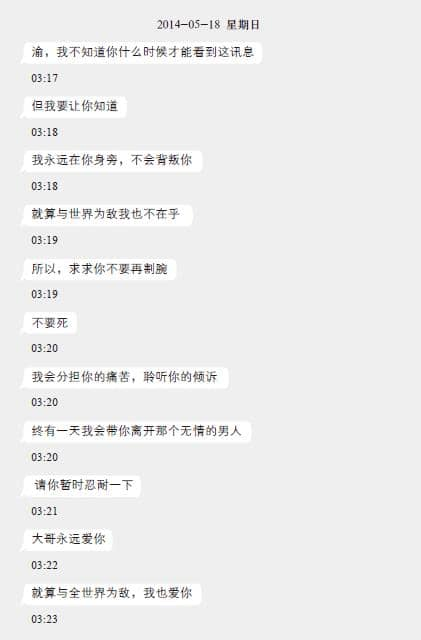

第八章
1
“这边没问题，你替我盯住那个姓施的就好。”站在街灯下，阿涅对电话里的鸭记说道。他挂线后回到车厢里，车里只有阿怡一人，她正聚精会神地凝视着屏幕。
自从确认了“小七”和“老鼠”的身份后，这几天阿涅和阿怡紧盯着杜紫渝的一举一动。阿涅开了一辆厢型车，连续几天停留在杜家附近。这是一辆车身特长、车顶稍高的白色福特Transit，虽然香港道路上最常见的客货车是丰田Hiace，但Transit也不算罕有，而且一般人都不会留意停在路边的客货车。然而，为了消除仅有的不确定因素，阿涅每天将车子停在广播道的不同位置，以防有精明的居民或尽责的大厦管理员对这一辆陌生的厢型车留下印象。今天，他选择的据点在广播道和范信达道交界。
外观上，这辆福特Transit平平无奇，车身有点脏、车头黑色保险杠有几处小凹陷、载货车厢的窗子密封，就如同典型提供租赁服务的商用客货车；可是车厢里却别有洞天，数天前阿怡甫走进车里便被车内环境吓一跳。
很多显示器。
载货的密封车厢中，左右两边的墙上挂着六台大小不一的电脑屏幕，靠近车头的角落有一个金属架子，每一层都塞满形形色色的电子器材，露出大量按钮、接头和指示灯。车厢内壁铺上了像海绵的隔音物料，而在右方的四台屏幕下有一张两米长的工作台，上面放着几台笔记本电脑、键盘、鼠标，以及一些阿怡没见过像是控制器的装置，另外还有几个星巴克纸杯和一些小吃零嘴。工作台前有三张独立座椅，电线铺满一地，台下有好几个瓦楞纸箱，角落有一个装着纸杯和便当盒的垃圾胶袋。车厢里的凌乱程度跟阿涅第二街的狗窝差不多，而且还隐隐有股臭味——不过，阿怡同时想起在天景国际酒店看到的一幕，她猜想这是阿涅的“流动工作站”。车内的装潢让她想起电视台的采访车，只是阿涅的车子外面不像采访车贴着标志，乍看与寻常客货车没有分别。
起初阿怡对待在这个狭小的空间感到不自在，但几天下来她已适应这脏乱的环境，尤其她看到“成果”，知道自己的心愿即将达成，就算要她埋伏于垃圾堆中她也没有怨言。
“阿涅，你说……今晚便会完结了？”
阿涅刚回到车厢，阿怡便问道。她的双眼仍紧盯着屏幕中的杜紫渝，而她从没想过，短短数天之内，这女生会变成如斯模样——发鬓凌乱、面如槁木、双唇干涩，一双眼珠空洞无神，就像深深陷进眼窝之中。
“对，今晚便会完结。”阿涅打了个呵欠，再坐在阿怡身边的椅子上。他的语气平淡得教阿怡觉得不可思议，仿佛他压根儿不觉得这个复仇计划是一回事。
即使这计划会令一位少女失去生命。
“你打算如何整治杜紫渝？”在阿怡目睹杜紫渝在实验室烧掉那页假遗书当天，她跟阿涅仍待在天景国际酒店603号房间时，她向阿涅问道。
“你要她一命赔一命吧？”
阿涅的答案叫阿怡感到意外。她以为阿涅是为了阻止自己杀人才故意提出代为报复，可是此刻阿涅却明确地说出要杜紫渝以性命抵偿罪责。
“你……是个杀手？”阿怡支支吾吾地问道。
“要对方填命，不一定要‘谋杀’。”阿涅摇摇头，“比如说，杜紫渝自杀就功德圆满了。”
“你、你的意思是我们将谋杀伪装成自杀？”阿怡说话时声音抖震，即使她内心充满着对仇人的杀意，但将这意念宣之于口、化成实质的计划，她理智上仍无法配合。
“不，我说的是自杀，真正的自杀。”阿涅直视着阿怡双眼，“比起我们亲自动手，你应该更想看到杜紫渝像你妹妹一样，自行了结生命吧？”
阿怡吞下一口口水。
“如何做到？”
“不知道。”阿涅耸耸肩，“但我会找出方法。”
“哼，最好有这么简单逼她自杀的方法啦。”阿怡对阿涅的说法嗤之以鼻。
“你弄错了，区小姐，我不是‘逼’她自杀。强迫、威胁一个人自杀，其实跟谋杀没有分别。人类比其他生物高等，在于我们拥有自由意志，而且知道自己拥有自由意志。我们懂得逻辑推理，了解凡事有因必有果，要为自己的决定负责。我不会逼杜紫渝自杀，但我会制造出自杀的选项，放在她面前，让她选择。这样子对你来说，才是真正圆满的复仇。”
阿怡无法理解阿涅的话，但她无意继续刨根究底。只要阿涅能替她达成愿望，她才不管用的是自由意志还是非常手段。
那天晚上，他们跟踪杜紫渝，看到她和一个成年男性约会。那男人二三十来岁，中等身材，像个上班族。虽然当时无法知道那男性的身份，但阿涅推断那就是杜紫渝的技术支援者“老鼠”先生。
“中午才惊险地烧毁了那页‘遗书’，除非她是个天才犯罪专家，否则事后只会赶紧找同伙商量，担心自己有没有露马脚，以及需不需要做某些补救。”阿涅解释道。
看到杜紫渝和那男人的互动，阿怡感到莫名的愤怒。跟在学校时亮出的表情完全不同，杜紫渝在“老鼠”面前露出少女该有的自然神态，眼神里尽是倾慕。阿怡猜，“老鼠”大概是杜紫渝的情人，而看到这一幕更叫她恼火——她认为杜紫渝恶贯满盈，没资格获得幸福。
可是，翌日下午阿涅的一通电话却令她略微感到意外。阿涅当晚跟阿怡分别后，独自跟踪那男人，查出对方的身份。他是杜紫渝的“兄长”。
“等等，为什么这个‘老鼠’不是姓杜，但却是杜紫渝的哥哥？”阿怡在电话问道，“所以说，他们不是亲兄妹？”
“他们的关系有点复杂……这次运气好，我轻易查出他的背景。下次再跟你说详情。”阿涅回答。
阿怡觉得阿涅的语调比平日爽快。也许比起调查，他更钟情复仇——阿怡暗忖。
两天后，阿怡上班途中再收到阿涅电话。
“今天下午到广播道商业电台大楼外找我。”
“什么？”阿怡之前从阿涅口中得知杜紫渝家在广播道，可是她不明白阿涅叫她到场的用意。
“我已做好部署，你想参与行动，今天下午就过来一趟。”
“我下午……嗯，我会请半天假。”阿怡本来想说下班才过去，但阿涅主动告知，她不知道拒绝的话会不会再被对方瞒着行事，“不过你竟然让我到场？”
“因为事关重大，我禁不起你这笨蛋自把自为胡乱插手破坏计划。”阿涅像是嘲讽阿怡道，“和调查事件不一样，这次我们做的事一旦曝光，可不容易摆平。”
阿怡的心沉了一下。她瞧了瞧身旁的乘客，还好没有人在意她在说什么，而她亦自忖刚才没说出任何露馅的话。事实上，纵使阿涅曾说明“这不是谋杀”，她亦察觉计划违反法律和道德的本质，知道必须慎重行事——连她手上这支手机也是阿涅三天前给她的，说这样子通话才“安全”。
下午4点，阿怡来到九龙城广播道商业电台门外。广播道一向行人不多，阿怡从专线小巴下车后，环视四周也没看到阿涅。当她打算打电话给对方时，手机却早一步响起来。
“马路对面白色的客货车。”
阿涅短短丢出一句后便挂线，阿怡抬头一看，发现在马路对面一栋私人屋宛前，一棵相思树树荫下的公共停车位上，正好有一辆白色的福特厢型车。她横过马路，走到客货车旁，车子的侧门随即打开，从里面探头出来的正是阿涅。阿怡还没来得及反应，已被阿涅拉进车厢。
“啊？”
因为车里灯光昏暗，阿怡花了数秒眼睛才能适应，与此同时却因为身处这个异常环境而大感诧异，环视周遭一阵子才理解这是阿涅的流动基地。最令她感到惊讶的，是挂在车厢内壁的数台屏幕里显示着杜紫渝的身影，对方坐在一张躺椅上，拿着一本小说正在阅读。
“这是实时影片。”阿涅示意着阿怡坐进其中一台屏幕前的椅子，再说，“她现在在自己的房间，你可以通过二号和三号屏幕观察她一举一动，其余这三个屏幕分别拍摄着她房子的其他地方。”
“你用什么方法拍摄的？你不是说过她住在十楼吗？”阿怡惊讶地问。广播道一带都是住宅，阿涅不可能像在天景监视学校图书馆一样，租几个单位来安装长镜头。
“航拍无人机。”阿涅从身旁捡起一台约手掌大小、有四个螺旋桨的灰色飞行器，“将几台停泊在杜家对面大楼的窗台顶或冷气机平台上，调好角度，便能将室内拍得一清二楚。有必要的话，更可以趁无人或对方睡着时飞进室内作近距离拍摄。虽然这款无人机飞行时始终会发出一点声音，但假如对方熟睡或烂醉，要做仔细调查或拍几张照片也很容易。”
阿怡猛然察觉，当天被古惑仔抓上车后，阿涅用来威吓金发男的照片就是用这方法偷拍的。阿涅根本没有闯进对方的家，只是用科技去制造曾经站在睡着的对方跟前拍照的假象。
“你遥控了一架无人机进她的房间？”阿怡指着二号屏幕问道。二号屏幕的画面明显是从室内拍摄的，连房间里的书架和房门上的细节也拍得一清二楚。
“不，那是她的笔记本镜头。”阿涅轻描淡写地说，“有必要的话，我还可以撷取她的手机前后镜头拍到的画面……不过她家窗户很多，窗帘也没放下，这次航拍机的覆盖范围已够全面，那就不用了。”
阿怡没料到阿涅说的“部署”是指这种侵入式的监视，她以为只是跟踪对方，确认目标每天外出习惯之类。看着屏幕里的房间，她不禁联想到阿涅可能连杜紫渝更衣的过程也没错过，怀疑他是否借计划为名满足个人的偷窥欲望——可是她回心一想，自己的目的是要杜紫渝偿命，在这个大前提之下，杜紫渝被变态男人偷窥也不过是微枝末节而已。
“你部署好摄影机，监视她的一举一动，那下一步是什么？”阿怡问。
“就如同我之前所说，制造条件将那‘选项’放在她面前。”
阿涅没有明说，但阿怡懂得他指的是“自杀的选项”。
“怎么制造条件？”
“对你来说，最理想的自然是以其人之道还治其人之身，比如让她遭网路霸凌之类……”阿涅顿了顿，再说，“不过我今天叫你来主要不是谈这个。我说过下次见面时会跟你谈杜紫渝的家庭关系吧？”
阿怡点点头。一想到杜紫渝跟她哥碰面时的表情，她心里便感到刺痛，无法原谅这两个夺去妹妹性命的家伙。
阿涅移过工作台上的一台笔记本，按下键盘，屏幕亮出几张照片，分别是一个年长的男士和阿怡早几天见过、那个跟杜紫渝约会的男人，后者所占的较多。
“这是杜紫渝的父亲，”阿涅指着其中一张照片，上面有一个五十余岁、神情端肃、穿黑色西装的男人，“他在建筑公司任职高层，这是他在公司网页的照片。这几天他刚好北上出差，为我们提供了绝妙的复仇机会——杜宅只有他和女儿居住，换言之，下星期他回来之前，杜紫渝都是一人在家。”
“杜紫渝的母亲呢？”
“几年前抛夫弃女，离家出走了。”
阿怡闻言稍感意外，她没想到住在高尚住宅区的富有人家妻子也会舍弃家庭——然而她回心一想，也许这才合理，就是有钱人才会如此任性。
“然后这便是‘老鼠’先生，”阿涅指着另一张照片，“他毕业于理工大学电脑系，在一家小公司担任程序员，目前独居……”
阿涅说明杜紫渝兄长的个人资料时，不断按下鼠标，屏幕上亮出一帧帧对应的照片，像是对方离开寓所的偷拍照、进出地铁站的情况，以及公司所在的商业大厦外观等。阿怡看着这些照片，渐渐察觉不对劲。
“等等，”阿怡注意到一个细节，打断阿涅的话，“这张照片背景里的菜馆，门口贴着端午节粽子的海报，那不是两个礼拜前的事吗？你怎可能在过去两天拍到这照片？”
“这不是我拍的啊。”阿涅爽快回答。
“那你怎么得到这照片？”
“我耍了点手段，从某家侦探社的电脑‘借’来的。”
“侦探社？”
“我说过这次运气好吧。”阿涅微微一笑，“我那天跟你分别后，跟踪这家伙到他所住的大厦外，结果看到有趣的一幕——有人躲在一辆黑色的车子里用长镜头偷拍他，确认他的回家时间。我一看就知道有同业盯上他了。”
“咦？”阿怡愣了愣。
“香港大部分侦探社都曾委托我协助，那个车牌号码我见过不止一次，连是哪一家侦探社我都知道。只要是合作过的侦探社，我都有埋下一些入侵电脑系统的后门，所以我能够浏览他们的调查报告。刚才说的资料，还有你看到的照片，通通是现买现卖，从那家侦探社的电脑挖来的。”
阿怡记得莫侦探提过，侦探遇上解决不了的麻烦都会找阿涅。
“谁委托了侦探调查他？”阿怡问。
“杜紫渝的父亲。”阿涅用指头敲了敲笔记本屏幕。
“为什么他要请人调查自己的儿子？”
“谁说他们是父子？”
“他们不是父子？”阿怡讶异地问，“那杜紫渝跟她哥没血缘的了？但你上次在电话里又说……啊！他和杜紫渝是同母异父的兄妹？”
“不，他们是同父同母的亲兄妹。问题是，杜紫渝的父亲不是她的亲生老爸，杜紫渝本来就不姓杜。”
阿怡一脸意外，想接话却又不知道从何问起，只好等待阿涅说明。
“杜紫渝母亲以前是个美容师，曾和一个不务正业的男人同居，育有一子一女，据说她十七岁便跟着对方。后来她年过三十，大概发现女人的青春不应浪费在这种没出息的男人身上，辗转认识了这个姓杜的男人。”阿涅再指了指屏幕中的照片，“十年前，她丢下家人，只带着五岁的幼女嫁入杜家，孩子改从继父姓氏，就是杜紫渝。”
“她疼爱女儿多于儿子，所以只带杜紫渝改嫁？”阿怡不知道“改嫁”一词是否正确，因为那女人本来就没跟同居男友结婚。
“如果她疼惜女儿就不会二度出走啦。依我看，这女人当年没放弃女儿只是出于私利，毕竟带着个五岁的可爱小女孩，很容易博得男人同情，这种手段我也会出卖。”阿涅亮出一副嗤之以鼻的样子，“这段婚姻维持不到五年，杜紫渝的母亲故态复萌，遗下字条跟另一个男人跑了，听说对方是个股票市场的投机客，简而言之，就是个现代赌徒。那个情夫的财产不一定比她丈夫丰厚，生活也不一定比较稳定，但肯定的是对方不会是个闷蛋。”
“那杜紫渝……”
“只好和继父一起生活。虽然没有血缘关系，但法律上他有责任照顾她。”
阿怡没想到杜紫渝的背景如此复杂。
“她父亲聘请侦探是想调查妻子的下落吗？”阿怡问道。
“杜紫渝的母亲在抛弃女儿和第二任丈夫数年之前已抛弃了大儿子，你认为从他身上可以调查到那女人的下落吗？”阿涅不屑地笑道，“事实上，这个被背叛的男人在妻子离开多年后才发现那个儿子的存在，自己的继女瞒着自己跟亲兄一直有来往，近年更关系密切，我猜他一定感到不是味儿。”
“你从侦探社的报告中知道这些情报？”
“不，我是从杜家的前任女佣口中得知的。”阿涅打开另一张照片，相中人是一个约五十岁的南亚裔妇人，“她叫Rosalie，来港二十多年，说得一口流利广东话，之前一直在杜宅工作，杜紫渝老爸婚前独居时是钟点女佣，婚后便改成全职，照顾杜紫渝一家三口的日常生活。去年被辞退，目前在何文田一个家庭担任女佣。只要通过中介公司就很容易查出这些外佣的动向，确认Rosalie所在后，我再假扮成学校社工，讹称杜紫渝最近有些情绪问题，于是找上她问一些家庭细节。”
阿怡本来想问对方怎会如此轻率透露人家的家事，但她想到阿涅一定又用上什么社交工程技巧，以高明的话术笼络人心。
“刚才你说杜紫渝瞒着父亲，与兄长来往？”阿怡问。
“对杜紫渝来说，真正能交心、倾诉的亲人只有哥哥吧，继父不过是个陌生人……然而近朱者赤、近墨者黑，杜紫渝似乎受她那个有点小聪明的大哥影响甚深，在对付你妹妹一事上，她的兄长还担当了出谋献策的军师角色，否则单凭杜紫渝一个中学生，才不会想到隐藏身份、搜集情报、煽动网民种种手段。”
听罢阿涅的说明，一股莫名的愤怒自阿怡心底油然而生。她一直没想到这一点——“小七”是小雯的同学，即使因为片面的正义感偏激地认定小雯是坏分子、需要予以惩戒也好，没有“老鼠”的帮忙，小雯才不会走上绝路；然而这个“老鼠”是杜紫渝的大哥，是个成年人，他居然没有在杜紫渝走歪时导正对方，更和妹妹一起密谋，运用自己的专业知识协助妹妹以正义之名行恶，这就无法原谅。
杜紫渝的家庭背景亦教阿怡暗吃一惊。相当讽刺地，她想起花生讨论区那篇文章中那段“在单亲家庭长大，没长辈管教她，所以性格变得更顽劣”，那恰恰是杜紫渝本身的写照。她无法得悉那个继父何故委托侦探社调查女儿的兄长，但她猜背后的理由可能很单纯，就是察觉那家伙对杜紫渝有坏影响，担心孩子会变得更偏激、更极端。阿怡想，换着自己是杜紫渝的继父，她也可能用相同的方法，摸清对方的底细，抓住把柄或弱点用来威胁对方，逼二人断绝来往。
“听那个菲佣的语气，”阿涅往后靠在椅背上，“她应该满关心杜紫渝，毕竟她看着对方长大，多少有像母亲的感情。说不定她继续留在杜家的话，杜紫渝有多一位能倾吐的家人，就不会跟兄长闹出这样一场荒谬剧……”
“你跟我说这么多，是想告诉我这并非杜紫渝的错吗？”阿怡反感地嚷道。
“考虑谁是谁非不是我的工作，我的责任只是替你执行复仇计划。”阿涅淡淡地回答，“我以为你会有兴趣想知道多一点杜紫渝的背景，毕竟她是你的‘杀妹仇人’吧？”
阿怡顿时语塞。不知道从何时开始，她不再关心杜紫渝这个人是谁，只将对方视作一个符号，是罪恶的化身。她只一心想要杜紫渝受苦，要她受尽折磨，却忘掉这复仇计划背后有何意义。
“就算杜紫渝缺乏母爱，这也不是她走上歪路的借口。”阿怡心想。阿怡很快克服心底里的一丝动摇，再次狠下心肠，誓要贯彻她目前复仇鬼的身份，要杜紫渝血债血偿。
接下来的一个多小时里，阿怡和阿涅默默地注视着屏幕上的杜紫渝。阿怡曾开口再问阿涅接下来有什么行动，阿涅却丢下一句：“你嫌闷可以回家，复仇不是泡方便面，不会三分钟便有结果。”
阿怡碰了这样一个软钉子，只好闭嘴。她不知道的是，阿涅虽然挂着一副扑克脸，此刻却思考着各种策略，将已知的事实与未来的发展连接起来，形成一个错综复杂的网路。这几天他脑袋里一直在计算着往后遇上的种种可能，分别盘算着不会被杜紫渝和施仲南看穿的计谋——对阿涅来说，调查真相比算计他人来得轻松，可是他钟情于后者，设置圈套带来的紧张感和挑战性，远比解谜来得有趣。
“哔哔——”
就在阿怡怀疑继续观察杜紫渝有何用途时，阿涅面前的笔记本突然发出短促的电子铃声。
“哦，来了。”阿涅边说边站起，走向车门。
阿怡以为阿涅终于要执行下一步，连忙抖擞精神。阿涅打开车门，阿怡才晓得那句“来了”指的是什么——站在车外的，正是阿怡在天景酒店见过的那个鸭记。他拿着星巴克的纸杯，瞄了车内的阿怡一眼，表情没有变化。
“今晚便拜托你了。”阿涅对鸭记说道，再往车外走去。
“什么？”阿怡见状，插嘴问道。
“换班啊。”阿涅说话时，鸭记已取代阿涅坐上他原来的座位，移过笔记本，键入几句阿怡看不懂的指令，“我一个人当然不可能二十四小时监视对方吧？”
“那我……”阿怡不知道自己该不该留下——她根本不知道监视杜紫渝、掌握她的作息后有什么行动。
“你要待通宵我不管你，不过车上只有男用尿壶，你要方便的话就自己想办法。”
“等——”
阿怡话没说完，阿涅已关上车门，车里只余下阿怡和鸭记。阿怡想追出去，可是她搞不懂车门开关，弄了好一阵子才成功打开，待她步出车外时，已看不到阿涅身影。
“区小姐，请你关上门。”阿怡身后传来鸭记低沉的声线，“别引起他人注意。”
阿怡闻言，只好依他所说回到车里。
虽然阿怡讨厌阿涅，但至少跟对方相处过一段时间，懂得如何应对，可是鸭记就只有一面之缘，跟陌生人没有分别。此刻和这个男人共处一个狭小空间，阿怡感到有点尴尬。
“区小姐。”
冷不防地鸭记主动搭话。
“是、是？”
“广播道和联合道交界的公园有洗手间，你有需要可以用那个。”
“啊……谢谢。”
鸭记说话时头也不回，视线一直放在面前几个屏幕之上。短短一句话令阿怡对这个壮硕的男人添了几分好感，虽然对方依旧面无表情，像个机器人一样。
阿怡瞧瞧手表，发觉时间不过是黄昏6点半，待在密封的车厢里，令她失去时间的感觉。她坐回本来的座椅，跟鸭记一样瞧着屏幕，观察杜紫渝的举动。好几次阿怡想打开话匣子，但鸭记身上仿佛传来一道“请别妨碍我工作”的气场，令阿怡打消念头。
“那是谁？”阿怡从另一台屏幕上看到，一个妇人从玄关走进杜家。
“钟点女佣，替杜紫渝做饭。”
鸭记言简意赅，没说半句多余的话。
阿怡看到那妇人在厨房煮菜，不一会儿便捧着两个盘子，放到餐桌上，再走到杜紫渝的房间叫她。当阿怡看到妇人替杜紫渝盛饭时，才意会那两菜一汤的晚餐是杜紫渝的一人份——以前在区家，同样的一尾煎鱼、一盘炒菜、一窝汤，已足够喂饱她们母女三人。目睹这一幕，阿怡心里更愤愤不平，暗骂杜紫渝生活无忧无虑、衣食丰足，却无事生非迫害小雯。阿怡从来不仇富，可是此刻心里也不期然滋生对有钱人的愤恨。
杜紫渝饭后回到房间，先用了一会儿电脑，再坐回躺椅上继续看小说。通过屏幕，阿怡看着杜紫渝的一举一动，可是她完全不理解这种监视有什么用途。
“今晚不会有进展。”鸭记就像看穿阿怡心事，突然说道。
“不会有进展？”
“你先回去也没有损失，明天再来吧。”
鸭记虽然木讷少言，但阿怡觉得他比阿涅像个正常人，至少容易沟通一点。她猜鸭记应该没骗她，于是点点头，决定暂时撤退，毕竟她也有点饿，难得今天刚收到工资，结束多天的节衣缩食生活，可以吃一顿饱的——连杜紫渝这罪人也可以吃如此丰富的晚餐，阿怡一想到自己一直吃泡面度日，就心有不甘。
“那我先回去了。”阿怡站起身，往车门走过去。步经鸭记背后时，她不经意地瞄了对方面前的笔记本一眼，发现画面显示着花生讨论区的版面，眼尖的她更看到文章列表中，有一个特别的标题。
十四岁女自杀背后有黑手？
“咦？”阿怡不自觉地喊了一句。
鸭记回头瞧了阿怡一眼，眼神像在问她怎么了。
“这……没什么，我先走了。再见。”
阿怡挤出一个笑容，告别鸭记后，直奔乐富地铁站。和阿涅相处多时，对方的行事模式她心里有底，在完成计策之前他才不会透露内容。阿怡猜，阿涅的复仇计划下一步早已开始了，只是暂时没对自己说明，她估计，花生讨论区那篇文章就是计划的一部分。鸭记是阿涅的搭档，阿怡知道对方再友善，在工作上是不会让步的，直接问他那是什么文章也不得要领——想知道那文章是什么，就只有靠自己。阿怡放弃吃大餐的念头，直接回家，一边用筷子吃着泡面一边在电脑打开花生讨论区，找寻那篇名为“十四岁女自杀背后有黑手”的文章。
然而，她花了足足一个钟头也找不到。
她浏览过讨论区的好几个版面，也翻到列表的十多页后，却遍寻不获。本来她以为文章被其他热门话题盖过，掉到数页之后，可是翻到一星期前的旧文仍不见踪影，而她几乎确定刚才在鸭记的电脑屏幕上看到的是列表首页。阿怡开始怀疑自己有没有看错，那会不会不是花生讨论区，而是外表相似的其他讨论区，可是阿怡是网路新手，才不晓得如何找寻其他网路论坛。
无计可施之下，阿怡唯有放弃。她想，明天下班后当面问阿涅就好，他不答的话就追问到他肯回答为止。
因为这天阿怡早退，翌日虽然值早班，为了补足工时，她工作至图书馆9点闭馆才下班。离开图书馆时她打电话给阿涅，知会对方她现在动身再到广播道，但阿涅接听后却说出另一个地点。
“我在又一城停车场P2，M区。”
“又一城？”
“P2，M区。”
阿涅说罢便挂线，让阿怡一脸茫然地站在街上。她思考了一会儿，判断阿涅言下之意是“假如你想来便到又一城的停车场找我”，毕竟若然阿涅不想她在场，他不会说出明确的地点。
阿怡来到九龙塘又一城停车场时已差不多10点。又一城停车场有三层，共有八百多个停车位，这晚差不多全满，但阿怡仍能顺利地依照阿涅的提示找到那辆福特厢型车。她刚来到车旁，车子的侧门便应声滑开，从昏暗的车厢里露脸的正是阿涅。
“为什么你将车子开到这儿了？”阿怡上车后，甫关上门便问道。
阿涅没有回答，只努努下巴，指了二号屏幕一下。车里的屏幕画面跟前一天阿怡看到的没大差异，大部分仍显示着从窗外拍摄的杜宅，唯独二号屏幕不一样，变成商场内一家咖啡店的风景。阿怡定睛一看，发现镜头焦点所在的一张沙发上，举着书本在阅读的不是别人，正是杜紫渝。
“那是杜紫渝？”阿怡问。
“嗯。”阿涅随意地回答道，“她下午便来到又一城逛书店，7点在美食广场吃了一客韩式石锅拌饭，之后便在这家咖啡店看书。”
“你怎么拍摄的？在人多的商场里开航拍机？”
“鸭记正贴身跟踪她。”
阿怡仔细再看，发现镜头大概放在桌子上，画面左侧还拍到一个失焦的咖啡杯。
“你们不是轮流监视的吗？”阿怡再问。
“特殊情况。”阿涅坐回椅子，语气带点别扭地说，“杜紫渝下午离家，和平日步行到乐富的行程不一样，她在路旁等候往又一城的小巴。因为无法确定她会不会转乘铁路到其他地区，我逼不得已丢下车子，坐上同一辆小巴跟踪，再联络鸭记替我开车跟我会合，然后交换行动。”
“你跟杜紫渝坐上同一辆小巴？她没有认得你吗？”
“我有乔装。”阿涅耸耸肩，“不过老实说，我得承认我有点低估她。我以为一个十五岁女孩承受着这种压力，只会窝在家里烦恼，没料到她反过来独个儿到外面散心减压，而且还在外面待这么久。虽然我有应付的手段，但始终有点出乎我的意料。”
“压力？她有什么压……”阿怡灵光一闪，想起昨天看到的讨论区画面，“啊！是花生讨论区的新文章？”
阿涅挑起一边眉毛，端详着阿怡的表情，再微微一笑，说：“鸭记不可能露口风，所以是你无意间瞄到的吧？”
“嗯，”阿怡直认不讳，“我看到列表有一条好像叫‘少女自杀背后有黑手’的文章标题，你昨天又说要让杜紫渝遭到网路霸凌，那两者就互相吻合……”
阿涅移过工作台上的一台笔记本，放在阿怡面前。
“既然你眼尖看到，那就没办法了。”
笔记本屏幕里，显示着花生讨论区的一串帖文，标题醒目地写着“十四岁女自杀背后有黑手？”虽然开串文章语无伦次，但阿怡也看懂那个叫superconan的版友的意思——他知道邵德平没有外甥，怀疑kidkit727的文章别有内情，暗示网民被唆摆利用。在一堆其他版友反击嘲讽的简短废话之后，一个叫zerocool的“资讯科技保安顾问”提出惊人的佐证，表示可能意外获取kidkit727的硬盘档案，插手调查真相。这篇新回应引起不少网民叫好，纵使zerocool的立场跟superconan差不多，众人对他们的反应却南辕北辙，毕竟在网路上态度比内容更受重视，网民宁愿听取包装得漂亮的废话，却不肯接受以脏话修饰的劝言。
杜紫渝看到这两篇爆料文的话，一定心慌意乱——阿怡想。
“你……你向花生讨论区的网友告密了吧？”阿怡问道，“告诉开串的那个‘什么柯南’邵德平没有外甥的人便是你吧？还有，那个抓到什么硬盘备份档的人是你的同伙？我才不相信这么巧合，这边刚有人翻案，那边就有人提供证据……”
“你弄错了，区小姐。”阿涅指了指讨论串，说，“我没有告密，也没有抓到备份档案的同伙——在这串里发言的所有网民都是我。”
阿怡愣了愣，一时间听不懂阿涅的话。
“‘所有人’都是你？”
“对。什么‘超级柯南’是我，什么‘ZeroCool’是我，就连插科打诨，留下无聊废话嚷着‘留位吃花生’的也是我。”
“你黑进了花生讨论区？但你冒他人名义发了这么多回应，那些真正的用户不会不发觉的啊？”
阿涅伸手按下笔记本的几个按钮，画面上亮出另一个视窗。
“你比较一下。”
阿怡看到新视窗一样是花生讨论区的网页，可是她仔细一看，发现有些微但显著的差别——新打开的花生讨论区，没有“十四岁女自杀背后有黑手”的讨论串。同样的文章列表，在左边原有视窗里“十四岁女自杀背后有黑手”夹在“我月入一万想买楼”和“【有片】港大中文系系花兰桂坊醉酒实录”之间，但在右边视窗那篇谈楼价的文章之后便是港大某女生的八卦。
“没……有？”
“这讨论串根本不存在，是伪造的。”阿涅说。
“伪造的？即是没有人知道邵德平没有外甥、什么保安顾问无意间得到可疑的备份档，通通都是谎言？”
“对，全是假的。”阿涅点点头，“但杜紫渝以为是真的。”
阿怡有听没有懂，狐疑地瞧着阿涅。
“你记得什么是‘MITM’（中间人攻击）吧？”
阿怡顿时想起之前在咖啡店里邻座女生平板上的那只杀人兔子。
“你黑了杜紫渝家的Wi-Fi，让她看到假的讨论串？”
“对。”
难怪我昨天在家找不到这文章——阿怡想。
“但你用什么方法黑进杜紫渝家的Wi-Fi？你说过要冒充站台的话，讯号便要比原来的强……”
“我没有冒充站台，而是直接将她的站台‘占领’了。”阿涅以拇指指了指搁在工作台上的一架无人机，“无人机不单能航拍，还可以搭载无线装置，让我入侵她的Wi-Fi路由器。我趁天黑开了一台停在她房间外壁的冷气机平台上，就能收到她家的站台讯号，进行遥控攻击。今天的Wi-Fi路由器有不少漏洞，即使用上WPA2 [1] 标准加密密码，只要用户贪方便开启WPS [2] ，黑客便能轻易绕过检查，顶多花一两个钟头就能够突破保安。之后我只要用暴力法进入路由器的管理系统，将DNS [3] 指到我设立的假货，我便能控制她家电脑的所有——”
阿涅看到阿怡不解地瞧着自己，苦笑一下，放弃继续说明：“总之，我现在就是杜紫渝家和真实网路之间的中间人，控制着她看到的、听到的一切，相对地，假如她要帖文章、寄信之类，我也能从中拦截、修改。”
“但你为什么这样做？”阿怡问，“要煽动网民、制造网路霸凌，犯不着大费周章伪冒他人写文章啊？”
“有几个原因，但最主要的是，要短期内完成你的委托，我就不容杂音干扰。你以为群众如此容易煽动的吗？别相信这种政客常用的白烂借口。操纵舆论、摆布群众很容易出差错，需要长时间策划，但操纵一个人的情绪却是小菜一碟，当你能控制一个人接收哪些资讯，便能控制他的情绪。”
阿怡想起阿涅曾在咖啡店里说过，给他一个钟头的话，他甚至能诱导邻座那个女生的想法、影响她的行为。
“可是你真的能够完全隔绝她接收到的资讯吗？她看到这些文章，当然会打电话给她的兄长求助啊？那样子不就露馅了？”
“她打不到。”
“为什么？”
“中间人攻击的手法并不限于Wi-Fi.”
阿涅说罢从座椅转身，伸长手臂敲了敲金属架上一个跟便当差不多尺寸的盒子的面板。
“这东西叫IMSI [4] 拦截器，不过坊间更常用的是它的别称‘魔鬼鱼Stingray’，它能够伪装成手机网路的发射站，拦截一定范围的所有手机讯号。‘Stingray’是美国公司哈里斯通信 [5] 的产品名称，因为它是市场上的第一代产品，后来就成为其他公司开发的同类型仪器的通称。”
“伪装手机网路发射站？”阿怡问，“即是说，就像你能控制杜紫渝的Wi-Fi，你连她能拨出什么号码、接什么电话都能控制？”
“难得你这次一点就通。”
“这东西坊间有卖？这不危险吗？岂不是说世上所有用手机通话的人都有可能被窃听？”阿怡讶异地问道。
“有在卖，但平民难以入手，只有政府、军方、警察在用……”阿涅顿了顿，再说，“啊，当然还有黑客和罪犯。不过我这台不是什么商用现成货，而是自组的。”
“那个鸭记造的？”阿怡想起阿涅提过，鸭记是电脑店店东。
“零件没错是从鸭记那边取得，但固件 [6] 来自我的老师。”
“你老师？”阿怡不知道“固件”是什么，但她对“老师”这两个字更好奇。
“带我入行的黑客，钻通信保安漏洞是他的专长。”阿涅说。
“这东西真的能拦截电话讯号？”阿怡对这个小盒子的功能有所怀疑，她认为现代科技不会如此儿戏。
“不然我怎么知道你的手机号码？”
“咦？”
“你之前每次接近我家，我便是靠它知道你在附近。”
阿怡想起委托阿涅调查初期，他总是对自己的行踪了如指掌，就连这两天她走近这辆厢型车，阿涅也能早一步察觉，主动开门呼唤。
“你拦截了我的手机？”
“我拦截了我家附近的‘所有’手机。”阿涅毫不在乎地说，“我在我家屋顶和附近三栋唐楼安装了四支连接另一台‘Stingray’的天线，邻近居民所有手机号码我都一清二楚，只要有陌生手机进入范围停留超过一分钟，我的电脑都会自动记录下来。你第一次找我时我已暗中抓下你的手机的资料，你之后一进入我家方圆一百米范围，我便会收到通知。再者，从手机讯号的强弱，我连你在街上哪个位置都知道。”
“位置？怎可能？”
“三角定位原理，跟卫星导航一样。你想知道的话，上班时自己查书。”
阿怡对阿涅的话半信半疑，但细心一想，又发觉似乎有凭有据。阿涅除了三番四次预知她跑到他家附近，更熟知埋伏自己的黑道的动静，甚至掌握了对方身份——阿涅曾说过，只要拿到某人手机或在对方的手机动点手脚，他便有能力支配虚拟世界里的那个人，相比之下，纯粹确认对方身份、挖出对方的隐私用作威胁，不过是雕虫小技。阿怡猜，当天阿涅用来击溃那个文身汉的床照，大概是从这个途径辗转取得。
“你说你能防止杜紫渝打电话给她的大哥，或是拦截对方打给她的电话，但他们彼此失联不会觉得奇怪吗？难道你甚至有方法伪冒声线，假扮成他人跟他们分别通话？”
“我有改变声音的工具，不过就算能完全模仿他人的声线，也难以还原对方的语气和口音吧，对熟悉的人而言，一听便知道有问题了。”阿涅瞥了屏幕里仍在咖啡店看书的杜紫渝一眼，再说，“然而现代人已习惯使用即时通信软件，以文字作为媒介交谈，这就让我们有机可乘。”
阿涅捡起工作台上的一部平板电脑，唤出一个界面跟LINE差不多的软件，放到阿怡面前。画面上显示着二人互传讯息的对话，一开始阿怡不明所以，但看过数段，赫然从内容发现对话者是杜紫渝和她的兄长。
“这是杜紫渝和她兄长的对话？”
“对，不过，这个‘兄长’是我。”阿涅狞笑道。
“你连这个也能办到？”阿怡惊讶地嚷道，“怎可能？”
“唉，看来我不从头说起，你只会像坏掉的录音机不断喊着‘为什么’‘怎可能’吧，”阿涅摇摇头，语气带点轻蔑但不至于令人反感，“首先，我在我们再访学校翌日已经去了广播道‘踩线’。当天我确认了杜家的位置，晚上便放出无人机，进行监视和入侵杜家Wi-Fi，同时使用Stingray拦截附近的所有手机讯号，筛选出杜紫渝的那一支，如此一来，准备工夫便妥当。”
阿涅将阿怡眼前的笔记本移到自己面前，在键盘输入一串指令，再将屏幕转向阿怡。
“前天早上，我利用Stingray传送这一封短信到杜紫渝的手机。”
以诺中学图书馆提提您，您的借书《１３．６７》将于三天后到期，如欲查询或续借请使用线上系统：http://www.enochss.edu.hk/lib/q?s=71926
“这是什么？”阿怡问。
“以诺中学图书馆的还书通知。当然这是假的，目的是要她按下链接。”
“按下链接做什么？”
“我在以诺中学的网页里动了手脚，只要杜紫渝在手机打开链接，浏览器便会连接到一台服务器，在她的手机上安装伪冒软件。”
“伪冒软件？”
“这叫作‘Masque Attack化装攻击’，就是将一些真正的程序换成外观相同的恶意软件。”阿涅举起平板，指着画面中的LINE图示。“这个图示和真正的LINE没分别，打开后的样子、功能也一样，一般人无法知道这其实是假的程序。杜紫渝登入她手机上的‘伪冒LINE’，我便拿到她过往所有来往讯息的记录，她传新的讯息，我的电脑就能够作出拦截，我亦可以伪装成她的通信对手。”
“就像‘中间人攻击’的原理？”
“就是。”阿涅眨眨眼，像是对阿怡能说出“中间人攻击”五个字感到好笑，“网路以文字为主要沟通媒介，人们习以为常后，便不会质疑电子世界里的讯息是否真实、躲在文字背后的又是否他们想象中的那个人。这也是今天出现不少网路诈骗的原因。”
“可是杜紫渝收到假的还书通知，她不会怀疑吗？”
“我在伪造花生讨论区的爆料串前，以相同方法先弄了假的学校讨论区文章，假装其他学生也收到同样的错误通知。而且，我还加了一篇谈论那天我们在图书馆引起的小骚动，杜紫渝看到有人问及你妹妹的事，自然不会继续注意还书的短信。”
阿涅为了增加那篇只有杜紫渝才能看到的假讨论串的可信性，特意检查以诺中学的系统记录，调查当天在图书馆使用打印机的高年级学生的身份，知道棋艺社的社长在场，冒充对方留言回应。事实上，杜紫渝看到那串讨论后没有第一时间找兄长叫阿涅有点意外，但同时令他更了解杜紫渝和兄长的信赖关系，好让他调整接下来的部署。
“我知道杜紫渝不可能无视图书馆版那碍眼的聊天，她一定会定时追踪，留意有没有人——例如郡主——插话，说出更多关于遗书的事，于是那就成为引导她去品尝‘主菜’的诱饵。”阿涅继续说明，“第二天我以另一名学生的名义，转贴了我刚才给你看的花生讨论区的假讨论串的链接。”
“然后她便上钩，以为自己的恶行曝光……”阿怡开始明白计划的来龙去脉，“她昨天先读到那个柯南的爆料，今天再看到有人说拿到他们的硬盘档案，而你用那什么化装攻击和魔鬼鱼机器，阻断了她向兄长求助的一切可能……”
阿怡看着屏幕里的杜紫渝，此刻她才发觉，虽然对方一脸平静地读着小说，眉宇间隐然流露着些微不安，掩饰着心事重重的样子。
“等等，”阿怡突然想到一点，“杜紫渝现在不在家，她不就有机会接上真正的网路？万一她发现花生讨论区没有那串文章，事情不就败露了？又或者她大哥这时候打电话给她，阿涅你这台魔鬼鱼的天线能拦截身在咖啡店的她的手机吗？”
“所以鸭记现在贴身跟踪她啊。”阿涅指了指屏幕，“他的背囊里有一台低功率的Stingray，能拦截半径十米内的讯号，另外也有一台用作伪冒Wi-Fi站台的笔记本，进行中间人攻击，确保杜紫渝继续被孤立。当然，假如她忽发奇想，跑去使用咖啡店的公共电脑上网，或是使用公众电话打电话给兄长，那我们就有点麻烦，鸭记到时只能随机应变，想方法加以妨碍。不过她九成不会这样做，因为她根本没怀疑过自己的手机有问题——现代人谁会放弃自己的手机不用，跑去使用投币的公众电话？老实说，今天大部分人身上连零钱都没有，他们都使用八达通之类的电子货币啦。”
阿怡没想到阿涅早有准备，也渐渐理解为何他说虽然杜紫渝跑到又一城教他感到意外，却也有应付的手段。
“目前杜紫渝还蛮镇定的，毕竟‘她的大哥’我在LINE说不用担心，不过她内心已有所动摇。”阿涅说道，“她真正的大哥仍蒙在鼓里，埋首在工作之上，应该一时三刻不会留意妹妹这边出了状况。如此一来，基本布局已完成，接着便是下一阶段了。”
“下一阶段？”
“你想参与的话，今晚就别回家。”阿涅露出狡诈的眼神。
阿怡不知道阿涅的用意，但她察觉她今晚必须留下来。
不久，屏幕里的杜紫渝收起书本，从座位站起来，镜头也摇摇晃晃的，跟着杜紫渝离开咖啡店。杜紫渝走到沙福道的小巴站排队候车，而阿怡从画面看到，鸭记就站在她队伍前方，相隔一位乘客。小巴站站着不少准备回广播道的居民，而在等候的同时，阿怡察觉到鸭记和阿涅不简单之处——一般来说，跟踪他人应该留在目标人物的后方，可是鸭记此刻却比杜紫渝排得更前。阿怡猜这有两个好处，一是假如鸭记排在杜紫渝身后，万一小巴满座，刚巧在鸭记和杜紫渝之间中断，鸭记就无法跟对方同车，继续监视，而排在前方的话，可以找借口礼让其他乘客上车，让自己顺利坐上杜紫渝会乘坐的班次；二是更工于心计的一步，试问谁会想到站在前方的人正在跟踪自己？然而鸭记却大胆地先读了杜紫渝的行动，知道她准备坐小巴回家，于是抢在她前面排队。
“我们也该出发了。”阿涅站起，往车头走过去。这时候阿怡才看到车厢前方放仪器的架子旁有一扇狭长的滑门，阿涅拉开后，便能挤进驾驶座。
“你留在后面继续看就好。”阿涅从驾驶座回头说罢，便关上滑门。
车子摇摇晃晃的发动，但阿怡没理会，只继续观察画面里的杜紫渝。鸭记和杜紫渝坐上小巴，分别坐在前方和后方。十五分钟后，阿涅将车子开回广播道一个停车位，回到车厢里，而鸭记他们仍在路上。再过数分钟，杜紫渝下车，但鸭记仍纹风不动坐在小巴上。
“她已经回到我们这边的Stingray拦截范围。”阿涅像是向阿怡解释道。阿怡也理解鸭记为什么没跟随下车，因为小巴不像巴士，乘客可以随时请司机停车，假若杜紫渝喊“有落 [7] ”后鸭记一同下车，这很容易引起对方注意。
五分钟后，杜宅的监视画面里传来杜紫渝的身影。与此同时，鸭记也回到“流动基地”，跟阿涅会合。
“辛苦你了，要你兼顾这边。”阿涅边接下鸭记递过的背囊边说。这天晚上，原来的分工是阿涅监视杜紫渝，鸭记监视施仲南，可是杜紫渝的行动令阿涅不得不放弃另一边。
“不打紧。”鸭记依旧以平淡的语气回答。事实上，对鸭记来说这边的跟踪更能显出他的本事——毕竟他本来负责监视的家伙，这几天不是在公司加班，就是窝在家里准备文件。
阿怡有点猜不透鸭记和阿涅的关系。鸭记对阿涅好像很敬重，不过那也可能是搭档间的信赖。她想起来记老板谈及阿涅的表情，也想起莫侦探对阿涅的态度。在阿怡眼中，阿涅不过是个能力超凡的讨厌鬼，她无法了解他们怎样跟这个怪人建立信赖关系。
鸭记离去后，阿涅对阿怡说：“椅背能够往后调节，你可以先睡一下。”
“睡一下？你不是说进行什么下一阶段吗？”
“时候还早。”阿涅边说边从工作台下一个胶袋掏出一条麦果棒，再埋首笔记本之上。
阿怡不明所以，但她决定姑且听从对方的话。车厢环境昏暗，加上连日的情绪波动，阿怡感觉疲累，在盯着屏幕里的杜紫渝的同时，不知不觉间阖眼睡着。朦胧中，她感到有人摇动她的左肩，惺忪间睁开眼，看到阿涅一如她睡着前的模样，坐在左边的椅子上。阿怡正奇怪阿涅为何这么快唤醒她，举起手腕瞄了一眼手表，却看到时针已跨过“三”字——她浑然不觉自己睡了快四个钟头。
“清醒了没有？”阿涅问。阿怡揉揉双眼，环视四周。监视屏幕中仍旧是杜宅的景色，不过颜色变成单调的淡绿色，对准杜紫渝房间的三号屏幕亦一样。
“行、行动了？”阿怡反问。
“嗯。”
“我们要做什么？潜入杜宅吗？”
“不，我们要打电话。”
“打电话？”
“半夜的骚扰电话。”
阿怡听罢睡意全消，质问道：“骚扰电话？你要我留下来就是做这种幼稚的恶作剧？”
“本质上的确是恶作剧，但却不幼稚。”阿涅耸耸肩。
“怎……”
“先别问。”阿涅在阿怡面前放下一个座台麦克风，再按了几下面前的电脑键盘。在三号屏幕里，卧床上的杜紫渝忽然动起来，伸手从床头取过手机。
“夜视镜头只能拍到这程度，将就一下。”阿涅说。阿怡这时才明白画面变成单调绿色的原因。
“喂？”
杜紫渝的声音突然从电脑喇叭传出。阿怡转头紧张地瞧着阿涅，比手势问他该做什么。
“你不按下麦克风的按钮，她听不到这边的声音的。”阿涅忍住笑意，可是语气像在嘲讽阿怡滑稽的模样，“不过第一通电话就别说话。”
“喂？”喇叭再次传出杜紫渝的声音，这时阿涅按下键盘，喇叭传出短促的“嘟”声，表示通话完结。
“再来便由你出场。”阿涅看到杜紫渝放下手机，便再次按下键盘，再指了指麦克风。
“万一她认出我的声音……”阿怡有点犹豫。
“我动了手脚，机器会先改变声调，她认不出来的。”
杜紫渝再次捡起手机，喇叭随即传来一句“喂？”语气有点不快。
“我该说什么？”阿怡抓住麦克风，手指放在按钮上。
“你想说什么就说什么，总之别提‘妹妹’或任何泄露身份的话，愈精简愈好。”
阿怡在犹豫之间按下麦克风按钮，可是未想到该说什么。然而阿涅那句“你想说什么就说什么”宛如驱使她行动的咒语，她咬一下下唇，说出简短的一句话——
“杀人凶手——”
阿涅在阿怡丢下一句后便按下键盘挂线，脸上挂着像是嘉许对方的笑容。阿怡看到画面里的杜紫渝整个人僵住，而她也意外地对刚才说出的四个字感到满意。她一直想亲口对那个害死妹妹的家伙骂一句杀人凶手，如今她不但做到，更令对方因为这四个字而惊慌失措，可谓一石二鸟。
“很好，不过欠一点调味，不妨粗鄙一些。”阿涅伸手移过麦克风，三度按下键盘。
“你是谁？你想干什么？你再打来我便报警！”就连阿怡也听得出，杜紫渝心底的焦躁正越过喇叭传进这狭小的车厢内。
“×你！嘿嘿。”阿涅装出阿怡没听过的下流语气，骂了一句脏话。他没等杜紫渝作反应便挂了线。
阿涅接连第四、第五次按下键盘，可是杜紫渝先是拒接电话，之后还关上手机。
“噢，Game Over.”阿涅笑着耸耸肩。
看到阿涅轻佻的样子，阿怡不禁有点气，但同时颇为疑惑。
“这些骚扰电话到底有什么意思？”阿怡问。
“你看看杜紫渝现在的样子？”
阿怡转头望向画面，发现杜紫渝缩在床上一角，用被子包紧自己，似乎受到相当大的打击。她没想到对方会如此恐惧。
“一般人接半夜的骚扰电话，顶多只会导致心情不好，但她不是。正所谓‘平生不做亏心事，夜半敲门心不惊’，她就是因为做了亏心事，所以我们只要敲敲门，就能敲碎她那装出来的镇静。”阿涅说，“而且这些电话是用来带出下一步的引子。”
“引子？”
阿涅敲打几下键盘，再移过笔记本，让阿怡看到屏幕。画面上依然是那个伪冒的花生讨论区，在“十四岁女自杀背后有黑手”的讨论串里，多了几笔新回应。
——竟然有电话号码！谁去打打看？
——我打了，接电话的是个女的！兄弟快上！
……
“杜紫渝看到后，便会察觉这些骚扰电话的来源。”阿涅在电脑触控板上拉动页面，再说，“加上这个，她更会相信网民已经确认那个逼你妹妹走上绝路的kidkit727拥有不可告人的动机，而且身份快要被揭穿了。”
在那些伪造的起哄留言上方，有一则回应与众不同，那名字勾起阿怡的不快回忆。
kidkit727发表于2015-07-04 03:09
re：十四岁女自杀背后有黑手？
我是zerocool. 我在解冻的档案碎片中找到这账号的密码了。我百分之百肯定这家伙跟事件有关。
“这……这也是伪造的留言吧？”阿怡问。
“当然。”
“但万一杜紫渝检查kidkit727的登入记录，又或者真的再登入kidkit727的账号，会不会察觉……”
“啧，我既然能伪造讨论串，就能伪造任何网页，包括登入记录页面嘛。”阿涅皱皱眉，仿佛受不了阿怡发问蠢问题，“而且就算退一万步来说，杜紫渝也不会登入，她现在恨不得跟kidkit727这账号一刀两断，又怎么会自寻烦恼，多此一举登入讨论区了？”
阿怡将视线放回监视屏幕上，看到杜紫渝依然蜷缩在被窝里，偶然发出抖震。阿怡想，也许就如阿涅所说，这串骚扰电话比想象中更有效。
“接下来做什么？”阿怡问。
“杜紫渝大概会维持这样子直至天亮，我要趁这段时间准备多一些用来误导她的假回应。”阿涅拉过一台笔记本放在自己面前。
“那我该做什么？”
“好好欣赏杜紫渝这副德行吧，这不是你的目的吗？你妹妹以前也可能因为看到网路上对她的抹黑，晚上一个人受同样的苦啊。”
阿怡心头一揪。自从她和小雯没睡上下铺后，她就不知道妹妹的睡相。也许，在小雯自杀前的一个月，她每晚也像杜紫渝一样，蜷伏在被子里，觉得自己正被不明来历的陌生人凌迟处死。
接下来的三个钟头里，阿怡大部分时间盯住杜紫渝，但也有假寐片刻。她不知道阿涅如何能不眠不休地执行计划，但她猜想，他可能早习惯了这种无规律的生活作息。
阿怡在早上6点20分离开广播道，坐地铁头班车回家，稍作梳洗后上班。阿涅告诉她“结局的高潮”还要多待两三天，不用心急，于是她决定不再滥用事假额度，准备下班后再跟阿涅会合。
在阿怡离开广播道前，阿涅问了她一个问题。
“演戏演全套，我会令杜紫渝的手机收到一堆骚扰语音讯息。”阿涅以带点慵懒的声线问，“你想她收到多少个？”
阿怡精神不足，对阿涅这个无聊的问题不感兴趣，于是随口说了个数字。
“四十二吧。”
“呵，‘生命，宇宙及万事万物的终极答案’吗？可惜原文里的‘老鼠’是‘Mouse’不是‘Rat’，不然就有够应景了。”阿涅笑道。
阿怡不晓得阿涅胡扯什么，但她懒得追问。她不知道阿涅说的玩笑话取材自道格拉斯·亚当斯的科幻小说《银河系搭车客指南》，纵使她在图书馆里见过这本书不下数十次。
下班后，阿怡再到广播道。因为这天她值早班，下午4点多便能离开图书馆，到达广播道时不过5点。阿涅依然穿着相同的衣服，在车里监视着，然而屏幕里的杜紫渝明显跟昨天有所不同。即使阿怡不是什么心理专家，也看得出杜紫渝忧心忡忡，脸容憔悴，被烦恼困扰得心神不宁。杜紫渝坐在电脑前，紧张地盯着屏幕，又不时捡起手机检查，似是等待着什么讯息。可是她每次检查手机后，都露出失望的表情。
“有什么进展？”阿怡问。
阿涅递过平板电脑，上面有杜紫渝和阿涅的LINE对话。
“她试过打电话，但我转到空号，她以为兄长没空接。这是之后的对话。”
阿怡看到对话里有“老板在我身旁”“今天好忙”“我晚点打给你”之类的字句。
“某程度上我写的也是事实啦，她兄长最近工作繁忙，几乎每天也要加班——这大概是香港IT业界的常态吧，工时长、待遇差、前途不明朗。说不定我做了件好事，让他集中精神工作，不用整天分心回复妹妹的讯息……”阿涅语带嘲讽地说道。
“我想看你写的那些花生讨论区假留言。”阿怡以命令式的口吻说。虽然阿涅觉得有点奇怪，但还是将笔记本放到阿怡面前。
“今天她看到的新留言，基本上你今早已全读过了。”阿涅说。
阿怡没理会阿涅的话，仔细阅读整条讨论串。她上班时灵光一闪，心生疑窦，在读过留言后她更确认所想没错。
“你又骗我了？”阿怡对阿涅问道。
“骗你什么？”
“你说过要令杜紫渝被网路霸凌，但这些假文章都是针对她的兄长而不是她啊？”阿怡一直隐隐觉得不妥，直到今天她才明白原因。
阿涅嗤笑一下，摇摇头：“原来你说的是这个。我之前说的是，最理想的复仇是以其人之道还治其人之身，比如网路霸凌——霸凌只是手段，重要的是目的。”
“目的？”
“你是要杜紫渝受苦，她有没有受霸凌不过是其次吧？”阿涅理所当然地回答道。
阿怡无法反驳。
“我知道这样做比单纯要她遭到霸凌来得有效。每个人都有不同的软肋，找出适合的弱点再戳下去，往往更快得到结果。”阿涅耸耸肩，“你可别忘了你的最终目的。”
阿怡晓得他说的是要令杜紫渝自杀。
“你看到杜紫渝现在的样子吗？”阿涅指着屏幕，“昨天她仍能够装冷静地看书，今天她已经丢下书本不管，只在意网路和手机，证明她开始心慌了。只要今晚我们再下一城，你的目的就差不多能达到。”
“今晚我们要再打骚扰电话？”
“不，我就说过那只是引子。你等会就知道了。”
阿涅故作神秘地笑了笑，再次说出像哑谜般的话。
差不多到7点，杜紫渝有所行动。
“她又外出了？”阿怡看到杜紫渝离开寓所，匆忙地说，“她再去又一城吗？我们要不要叫鸭记支援？”
“不，她应该只是到附近吃晚饭罢了。这程度我们只要开车尾随就好。”
“你怎知道？”
“她没带包包，衣服鞋子也随便穿。”阿涅说，“你平时离家下楼买个饭盒，跟你上班穿的衣着也有所不同吧？”
阿怡觉得阿涅所言有理。阿涅将拍摄着杜紫渝所住大厦正门的画面调至他们面前的屏幕，而当杜紫渝来到街上，没站在路旁候车，徒步往联合道走过去，就更证明他预测正确。
“嗯……她横过了马路……她不是要去乐富广场，而是去浸会医院那边。”阿涅从座位跳起来，一边打开往驾驶座的滑门一边说，“很可能是联合道建新中心。这边餐厅少，要预测目标行动蛮轻松。”
阿涅将车子开到广播道近联合道交界，再次停车，回到车厢里。
“我们先在这儿‘开第一枪’。”
“开枪？你不要是干什么危险的事吧？”阿怡犹如丈八金刚，完全不晓得阿涅在说什么。
“哎，你真是想象力平庸。那是比喻，是比喻。”阿涅苦笑一下，从工作台下取出一个手机大小的黄色盒子。盒子其中一面上有数排纽扣大小的黑色圆形，组成蜂巢般的形状，阿怡不知道那是按钮还是什么。
阿涅走到工作台尽头靠近车尾的位置，伸手往车厢内壁一拉，阿怡才发现原来那儿有扇窗，只是玻璃给换成不透明的钢板。阿怡凑近阿涅，探头跟着对方在窗缝往外看，只见隔着一条马路，杜紫渝正沿着广播道斜坡走下来，快要走到公园门口。
“别凑过来妨碍我，你看屏幕就好。”阿涅推了阿怡一下。
“屏幕才看不——啊。”阿怡本来想抗议屏幕仍拍摄着杜宅，回头一看才发现二号屏幕的画面跟刚才她从窗缝看到的差不多，正显示着杜紫渝缓步走近。她想起几天前再访学校时，阿涅说过他用车子的摄影机拍摄着学校大门，如今想来，当时停在学校门前的大概就是这辆厢型车，车外九成接了隐蔽式镜头。
“接下来你便会看到成果。”阿涅一边用电线将他那支迷你手机接上那个古怪的盒子，一边说。就在阿涅按下手机屏幕的一刹那，阿怡看到杜紫渝整个人愣住，惊讶地回头，再往四边张望。
“发生什么事？你用什么击中她吗？”阿怡问。
阿涅关上车窗，转身面对阿怡，再按下手机的触控屏幕。
“杀人凶手——”
阿怡怔了一怔。就像耳语似的，她听到昨晚她对杜紫渝说的那句话，不过声调跟自己的声音略有不同。
“这是喇叭？”阿怡指着那满布圆点的盒子，问道。
阿涅没有回答，举起盒子，在阿怡面前摆动。
“——人凶——”
乍看是寻常的动作，阿怡却被阿涅吓了一跳。她发觉只有盒子正对着自己时，她才听到声音。
“这是……”
“这东西叫导向式扩音器。”阿涅解释道，“简单来说，就像手电筒可以将光线集中在一点之上，这仪器可以将声音集中在一个很狭窄的范围，只有跟扩音器处于相同直线的人才能听到声音。原理是利用超音波不会在空气中扩散的特质来‘锁住’我们想传递的声音频率，详情我就跳过，总之刚才杜紫渝就像听到有人在她耳边骂了句‘杀人凶手’。”
阿怡不知道这种先进科技产品的存在，阿涅这小盒子令她大开“耳”界。
“一枪并不足够。”阿涅放下盒子，跳回驾驶座。
车子尾随杜紫渝驶到建新中心外，阿怡从屏幕看到她走进一家叫“狮子山餐厅”的店子后，阿涅便将车子驶进旁边的金城道。从驾驶座回到车厢，阿涅从工作台下一个铁箱里取出一件皱巴巴的灰色衬衫，披上后再穿上一条不搭调的棕色长裤。
“你做什么？”阿怡问。
阿涅完全无视阿怡，继续自顾自地换衣服。穿上一双残破的黑色皮鞋后，他取出一顶附着灰白色假发的帽子，盖到头顶上。他又从铁箱拿出一面座台镜，仔细瞧着镜中的自己，将两团棉花塞进嘴巴，分别藏在腮帮子两边，令他的脸颊略微臃肿。接下来他用白色的涂料抹在眼眉和胡碴上，再戴上一副老气的金边眼镜。
刹那间，阿涅看起来老了快二十岁，活像个六十岁的老头。他眯着眼，半皱着眉，眼角的皱纹比平时深刻几倍，加上上唇微张，稍稍露出门牙，两边的法令纹更叫人看不出他的真实年纪。
“我去去就回。”阿涅换上一把低沉的声线，对阿怡说道，然后离开车厢。阿怡猛然想起，阿涅昨天说过他曾乔装跟踪杜紫渝，大概就是用类似的技巧。
阿怡回头望向二号屏幕，看到阿涅正走进餐厅，可是镜头拍不到餐厅里的情形。就在她正要纳闷的时候，笔记本屏幕上一个摇摇晃晃的视窗画面抓住她的注意，细心一看，才察觉视窗里映着、带点古风的棕色木制柜台正是狮子山餐厅里的环境——阿涅身上带着一个隐蔽式摄影机。
“先生，一位吗？”
笔记本喇叭传出声音，阿怡从画面确认那句话来自餐厅服务生。
“啊呀，我想买外带哪。”
就在阿涅说出这句话时，镜头转到左方——阿怡看到，坐在角落的正是杜紫渝。
“先生想点什么？”
“哎哟，你们有没有三明治啊？”
“三明治啊，我们有这几款。”
“不好意思哪，我眼不好，看不到菜单……”
就在阿涅跟服务生一答一合之际，画面里的杜紫渝忽然抬头，神色紧张地环顾四周。阿怡瞧向旁边，才发现工作台上的手机和那台导什么扩音器都不见了。
“……那茄牛治 [8] 就好了啦。”
“好的，一客茄牛治，二十八元。”
阿怡几乎没听到画面外阿涅和服务生的对话，她只盯着杜紫渝。纵使阿涅身上的摄影机拍得不够清晰，但她也看得出杜紫渝脸上的表情已由紧张转为惊惶。杜紫渝一时望向前方的一对情侣，一时定睛瞧着邻桌的男生，就像他们是厉鬼恶魔似的，正伺机勾魂夺魄。阿怡此刻明白阿涅这招的可怕之处——假如杜紫渝够清醒，察觉自己听到旁人听不到的声音，大抵会以为自己疯了。昨晚的骚扰电话没错不过是一场胡闹，但就如阿涅所说，那只是引子，现在的手段才是真正的杀着。
“先生，你的茄牛治。”十分钟后，喇叭传来这一句。
“谢啦。可以给我几张纸餐巾吗？”
画面中一名服务生刚为杜紫渝送上一盘意大利面，然而杜紫渝在服务生离开后仍没有碰餐具，继续打量其他人。接下来发生的事十分急促，忽然间，杜紫渝按着餐桌站起，浑身发抖，脸色苍白，面容扭曲。她边环顾四方边走到柜台，丢下一张纸钞，头也不回冲出餐厅。
“小姐？小姐！”
阿怡望向另一台屏幕，看到杜紫渝逃出餐厅后，在路上狂奔，很快便离开镜头范围。与此同时，阿涅大力地开门，将装着餐盒的胶袋丢到工作台上，二话不说挤回驾驶座，开车追上去。
杜紫渝回家后，阿涅和阿怡再次来到她家附近一个停车位守候。阿怡想杜紫渝差不多要崩溃了——她看到对方回家后发疯似的将所有电灯和电视打开，再一头躲进被窝之内。
“看，我没骗你吧。多有效。”阿涅一边脱下乔装的衣服一边说。
“嗯……嗯。”阿怡不知道如何回应。阿涅再次令她眼界大开，可是她不甘愿称赞这个男人。
“这是前菜，”阿涅用湿纸巾抹去眼眉和下巴上的白涂料，“明天便是主菜。”
“明天？”
“杜紫渝的反应比我想象中大，既然如此，为免夜长梦多，明天我便会走最后一步。你喜欢的话可以留在这儿继续欣赏杜紫渝这样子，但换作我的话，今晚便回家好好睡一觉，留点精神明晚看结局。”阿涅说罢，打开餐盒取出三明治，咬了一口，“这家餐厅的三明治附带薯条，不错。可惜没有番茄酱。”
由于阿怡昨晚只在车上断断续续地睡了几小时，今天又在图书馆劳动了一整天，身体十分疲累，只是精神上知道这是替小雯报仇的关键时刻，才凭着意志前来观看杜紫渝接受制裁。听到阿涅的说法，她便决定先回家，准备翌日进行最终复仇。
然而这晚阿怡睡得不好。她不知道是因为兴奋，还是因为不安，半夜好几次转醒。杜紫渝惊恐的样子不时浮现脑海，而那张脸孔却不时从杜紫渝变成小雯的。难过、愤怒、惊惧的情绪交替袭来，到她完全清醒时，已是早上8点，临近上班时间。
“阿怡，你这几天还好吗？”午休时，在图书馆的休息室里Wendy对阿怡问道，“我看你好像很累似的？是身体不舒服吗？”
“没事，有心了。只是这几天有点私事要处理……”阿怡勉强露出笑容，“明天开始应该会好起来了。”
“哦……”Wendy搔搔头发，说，“没事就好，我看你气色一天比一天差，有点担心啦。上个月你也说过类似的话，我怕你遇上什么大难题。别怪我鸡婆，要是我能帮忙的就告诉我，就算要借钱也无问题……”
“……谢谢啦。”
因为Wendy的话，阿怡不禁反思——过了今天事情就真的了结吗？或者该问的是，即使复仇成功，她心里的那根刺就能拔掉，重拾昔日的平静生活吗？
阿怡不敢想下去。事到如今，已无回头的选择。
2
晚上7点，阿怡压下心里的忐忑，再度踏足广播道。这天阿涅将车子停在杜紫渝家楼下不远处，跟大厦入口相距不过三十米，但由于路边种着几棵大树，停在树荫下的厢型车也不甚显眼。当阿怡步近车子，车门再一次提前滑开，只是探头出来的阿涅跟以往有点不一样，他正在讲电话。他示意阿怡坐到之前坐惯的座位上，自顾自地离开车厢，带上车门。阿怡本来有点好奇阿涅在跟谁谈话——她不知道是不是又有突发情况——但当她转头看到墙上的监视屏幕后，她便无法移开视线。
她没想到杜紫渝会变成这副模样。
阿怡独自待在车里，仔细瞧着屏幕中颓然乏力、沮丧失神的杜紫渝。画面中的杜紫渝坐立不安，一时站起来在房间中踱步，一时坐在电脑前惘然地盯着屏幕，有时又焦灼地拾起手机，按动几下后，用力丢到一旁。她蹲坐在椅子上时身子摇晃，神态恍惚，目光空洞，乍看还会以为是患上精神病的病人。阿怡留意到杜紫渝双臂震颤，只是她不知道那是出于愤怒还是恐惧，抑或两者皆是。她唯一能确定的是杜紫渝正陷入严重的焦虑不安，加上那张人不人鬼不鬼的脸孔，她知道对方昨晚睡得不好，甚至没有睡过。
昨天的诡计竟然如此有效——阿怡暗忖。数天前在同一个屏幕上，她看到杜紫渝像个普通女孩子安静地坐在椅子上看书，没想到才不过几天便落得这凄惨下场。本来，阿怡以为看到杜紫渝这副德行会令她感到痛快，但实际目睹时却没有丝毫快感。阿怡心底的愁苦与抑郁没有消退，而她更隐隐听到来自灵魂深处的质问：“你以为复仇的果实真的甜美吗？”
——不，我不是为了痛快才决定复仇，我只是要为小雯讨回公道……
“啪。”
阿涅打开车门的声音打断阿怡的思绪。他刚跟鸭记通完电话，吩咐对方继续留意施仲南的手机通信——他们在施仲南的手机上，同样使用了Masque Attack.
“阿涅，你说……今晚便会完结了？”阿涅甫坐下阿怡便问道。
“对，今晚便会完结。”阿涅打了个呵欠，满不在乎地回答。
阿怡很清楚这句话背后的意思——杜紫渝今晚便会自杀。事实上，看到杜紫渝现在的容貌神情后，阿怡觉得这女生突然拔出刀子自刎也并不稀奇，毕竟“绝望”两个字就挂在对方的脸上。
“你做了什么，令她一天之内变成这模样？”阿怡察觉到，杜紫渝不会单单因为幻听而落胆至此。
“没什么，就只是往她的‘软肋’狠狠刺下去。”
阿涅将笔记本挪到阿怡面前。视窗里依然是花生讨论区上那条伪造的讨论串，但回应数比昨天增加了几倍。最先抓住眼球的，是回应中有杜紫渝兄长的照片，而阿怡仔细阅读内文后，更感到无比惊讶。
“这、这篇新闻也是假的吧？”阿怡读到题为“警方拘捕男子；涉嫌盗取大量学生资料”的一篇回应时问道。
“当然。”阿涅伸手按下笔记本的触控板，“我连新闻网站的假页面都弄好了，即使杜紫渝点进链接也不会露馅。”
“你伪造这种罪名，杜紫渝会信以为真吗？”
“什么伪造罪名？被捕一事虽假，但罪行是真的啊。”阿涅皱皱眉，“之前不就给你看过吗？”
“你是指杜紫渝在图书馆用那什么充电器偷取那张拍到小雯的照片？”
“不啦，我是指这个啊。”
阿涅递上平板，上面显示着阿怡曾看过的通信记录。
——你有没有将我给你的其他档案放在同一个硬盘？那些档案曝光，我们就完了！
——哪些档案？
——就是你叫我在学校偷偷搜集的资料啊！其他同学手机中的照片、通信录、短信之类的备份档啊！假如有人在花生公开你的身份，你还可以用什么电脑时钟慢了一天做借口，但万一他们发现我们的关系，确认你和区雅雯不是毫不相识的陌路人，那我们就脱不了罪啊！！
“难得杜紫渝主动透露这种黄金情报，我自然不会放过。”阿涅露出贼笑。
“你拿到这些档案？”
“没有。”阿涅摊摊手，“拿来也没有意思，反正我知道她将偷来的资料拷贝给了兄长，那就足够让我大做文章。我只要以zerocool的身份胡扯什么‘那是学生的隐私’‘有不能公开的照片’之类，杜紫渝便会对号入座。就算我写的东西细节上跟她偷来的资料不符，判断力低下的她才不会想到我只是虚张声势，只以为自己错过了那些细节。”
“你又怎么拿到她哥的这张照片？这不像是侦探社的偷拍照……”阿怡瞄了笔记本一眼，再问道。
“我不就说过，我在杜紫渝手机上安装了伪冒的LINE，连她过往的通信记录都到手了嘛。那张照片是她拍的，她用LINE传给兄长，我自然能拿到了。做到这地步，杜紫渝铁定不会怀疑网路上的种种全是假话。”
“可是，这就是杜紫渝的弱点？”阿怡有点不解，“即使她以为亲兄被捕，害她心烦意乱，也不可能令她自寻短见吧？”
“人啊，只有两种情况下会放弃生命。”阿涅换上严肃的语气，说，“第一种很常见，就是承受很大的痛苦。也许是肉体上的痛——例如癌症病患——又或者是精神上的痛，像抑郁症之类。自杀的动机可能是逃避痛苦，也可能是以死控诉，期望自己的死能令他人产生愧疚之心。严格来说，这是非理性的手段。”
“世上有理性的自杀吗？”
“有，就是牺牲自我来达成某目的。客观上不一定理性，但从自杀者角度来看，是一种合理的决定。这就是第二种情况。”阿涅瞟了阿怡一眼，“假如现在你和妹妹被困火场，身边只有一副氧气筒，你会自己使用还是让妹妹用？”
阿涅的话叫阿怡心里一沉。如果能换回小雯的将来，她恨不得自己当天能代替妹妹，从二十二楼的家里跃出窗外。
“我说过我不会逼杜紫渝自杀。我要她理性地选择，由她自己决定了不了结性命，所以我不会容许她单纯为了逃避痛苦而自戕，而是要她明确地、清晰地面对死亡的恐惧，体会放弃生命的一刻所带来的绝望感，并且理解到这是出于自我意识、是自由意志下的结果，不是和稀泥、半吊子随便一了百了的胡闹死法。”阿涅顿了顿，再说，“可是我不是什么善人，既然这是一场复仇，就自然要制造对她不利的条件。”
阿涅拉动笔记本画面，展示出假讨论串中一则稍长的回应。
——你们别高兴得太早，依我看，这家伙很容易脱罪。他没有主动发放手上的资料，那是zerocool用不正当方法取得的，换言之，就算警察在他的电脑找到档案，他亦可以用相同的借口开脱，说是从网上找到的……
“我要杜紫渝相信，她是危害兄长的关键一环。我利用他们的疏离关系，引导她得出‘只要警察没找上她，哥哥就有机会脱罪’的荒谬结论。这固然不是事实，但只要她误以为这是事实便行。而待会儿我会让杜紫渝看到这则留言……”
阿涅按下键盘，屏幕上亮出新的视窗，上面有一段文字。
我认识被捕的男人，他是我的同事，没想到他是这种人，真是知人知面不知心！我有内幕可以爆：他提过他有一个中学生妹妹，我曾碰见过他们在一起。我记得他妹妹穿的校服，跟那个自杀女生的学校的很相似！我猜一定有关系！
“……这样子，杜紫渝便必须正视目前的两难——她自身的存在正危及兄长。她愈爱慕哥哥、愈顾虑对方的话，她就愈容易动摇。”
“你知道有人见过他们在一起？”阿怡指着那段文字，问道。
“不，那是胡扯的，但总之此刻杜紫渝相信是事实就行。”
“可是，就算她以为兄长会因自己入狱，那也不过是‘盗取隐私’这种小罪名啊？犯不着牺牲性命来——”
“假如是刑事案件，事情便会落在媒体的镁光灯之下，大众会详加审视。杜紫渝担心的是兄长会因为你妹妹一事遭网路公审，空穴来风地将他标签成因爱生恨的变态，毁掉他的人生。在这个前提下，向警察和盘托出迫害你妹妹的真相也于事无补，‘自首’不会是选项之一。”阿涅打断阿怡的疑问。
阿怡渐渐理解这思考脉络。她很清楚被逼成为公众焦点有多大压力，而她知道煽动网民欺凌小雯的杜紫渝亦很清楚这点。
“加上这几天我们施计令她精神压力大增，她更容易钻牛角尖，将死亡视为可以解决问题的选项。”阿涅淡淡地说，“在情绪不稳、睡眠不足时听到喊着‘杀人凶手’的耳语，足以令人失去现实感——一个人身处貌似日常的异常环境之中，心智就很容易受影响。”
直到此刻，阿怡才真正明白之前那些骚扰电话、伪装幻听的用途。那些手段并非用来令杜紫渝受苦，而是要影响她的判断力，在孤立无援的环境下迎接终极考验——“为了至爱的兄长，你愿不愿意牺牲？”
然而，有一件事阿怡并不知道，阿涅也无意详述。为了限制杜紫渝的思考方向，阿涅还下了另一道药引。
在杜紫渝阅读部落格留言的，便是阿涅。
在见过Rosalie，了解杜紫渝的家庭背景后，这次的计划已在阿涅脑海里成形，当天晚上他便在杜紫渝的部落格里以“小芳”之名写下这药引。他要杜紫渝重读那本小说，反复思量主人翁的心情，在她的潜意识里，植入“为他人自杀是合理的”这念头。他固然无法肯定这能否成功，但根据经验，他知道多做一重工夫有利无害。这不是什么催眠术或精神控制能力，不过就像广告，有时一句宣传口号、一幅商品图片，便足以影响一个人的最终决定。
“好好观看杜紫渝人生最后的一段时光吧。”阿涅将座位的椅背向后调节，往后一仰，一边撕开一条麦果棒的包装袋一边说，“这是你的复仇，你就有责任看到最后。”
接下来几小时里，阿怡默默地注视着屏幕，观察着生命之火逐渐熄灭的杜紫渝。阿涅罕有地给阿怡递过一条麦果棒，可是阿怡没有胃口，她的内心正翻腾着。即使恨不得手刃仇人，阿怡仍有一般人的良知，对夺去他人性命感到不安。人类能够想出邪恶的意念、说出歹毒的言语，但要正眼看待由它们衍生出来的残酷，大部分人却做不到。阿怡好几次想向阿涅提出先回家，着对方完事后再通知自己，然而阿涅那句“你有责任看到最后”就像咒语，绑住阿怡双腿，令她坐在座椅上目不转睛地盯着杜紫渝，无法向身边的复仇者提出要求。
晚上9点多，阿涅将那条“我认识被捕的男人”的回应更新至假网页上，读过留言的杜紫渝身上出现明显变化——阿怡看得出，纵使她依旧满脸愁苦，眼神却不再游移，嘴唇也不再震颤。阿怡仿佛觉得杜紫渝会突然打开窗子，从十楼飞坠街上，可是对方待在椅子上继续盯着屏幕，一个多钟头后仍没有动作。
“她……会继续这样子到什么时候？”阿怡问道。
“区小姐你真绝情，囚犯行刑前也有足够时间祈祷，你却连丁点时间也不愿给予。”阿涅狞笑一下。阿怡其实没有这个意思，她只是难以忍受这种折腾，无止境的等待叫她如坐针毡。
“我才——”
阿涅将工作台上的座台麦克风挪到阿怡眼前，打断对方的话。
“你等不及的话，可以亲手放下压垮骆驼的最后一根稻草。”
“什么？”
“你记得那台导向式扩音器吧？我有一架无人机配备了相同的装置，它现在通过打开了的窗户正对着杜紫渝。假如她再次听到‘幻听’，怂恿她为兄长牺牲，她大概会很快行动。”
眼前的黑色麦克风仿佛渗出一股寒气，那个红色按钮就像恶魔一样，正向阿怡招手。
阿怡有冲动一口气按下按钮，再次吐出几句“杀人凶手”或其他恶毒的话语，可是她的肩膀只能微微一颤，无法提起手指按下去。她不知道她提不起来的，是她的手臂、是她的勇气，抑或是那份行刑者的责任感。
“你想快点完事也好，反正我之后还要跟进一堆杂事，让你得到真正的复仇。”
阿怡愣了愣。
“真正的复仇？”
“你以为我为什么要用这么迂回的方法对付杜紫渝？”阿涅浅浅一笑，说，“你试想一下，杜紫渝因为这原因自杀，自然不会留下遗书，而她今晚死后，我撤回所有无人机、消除一切入侵痕迹、还原她的手机程序，她的兄长便无从知道亲爱的妹妹自杀的原因。几天前还活蹦乱跳的妹妹，突然莫名其妙地死了，而自己完全看不出端倪，他这辈子会懊恼得要命，后悔自己为什么在乎工作多于妹妹，即使将来飞黄腾达，也换不回妹妹一命——这对你来说不是最完美的复仇吗？”
阿怡大吃一惊。她了解阿涅的用意后，赫然明白阿涅当初那句“保证满意”并不是空谈。他不止向杜紫渝报复，更大的目的是要复制阿怡的不幸，让杜紫渝的兄长承受。他了解阿怡受过的痛苦，而且深知这痛苦的精髓，再毫不留情地还诸始作俑者身上。阿怡在阿涅身上感到前所未有的黑暗气息，她几乎怀疑，面前这家伙是人类还是恶魔，她是不是像浮士德一样将灵魂卖了给梅菲斯特。
不，是“涅墨西斯”——阿怡突然想到。阿涅人如其名，就是复仇的化身。
阿怡盯着麦克风，犹豫着该不该依身旁的复仇代理人所言，按下按钮，将身处悬崖边的杜紫渝轻推一把。她对到了这节骨眼自己仍然无法狠下心感到诧异，毕竟这几天她一直想致杜紫渝于死地。
“我……我该说什么？”阿怡将指尖放在按钮上，再次向阿涅问两天前问过的问题。
“什么也可以，比如你最擅长的那句‘杀人凶手’，又或者‘你有勇气去死吗’‘你这种人渣死不足惜’‘是时候完成去年没做完的事’……”
阿怡听到阿涅引用杜紫渝寄给小雯的信件的内容，唤起她的恨意，加强了她行刑的动力。但她稍一定神，发觉有句话不太对。
“‘是时候完成去年没做完的事’？去年发生什么事？”
“没什么大不了，”阿涅噘噘嘴，“就是杜紫渝自杀未遂而已。怂恿试过寻死的人再自杀并不困难，基本上你随便说些挑衅的话都能成事。”
阿涅的话令阿怡僵住。
“她试过自杀？”
“对。”
“你怎知道？”
“她割腕后留下疤痕了。”
阿怡转头紧盯屏幕，可是无法在这种解析度下看清杜紫渝的手腕。
“你不用仔细看。”阿涅以不带感情的声调说，“这画面看不清的，更何况她穿了长袖衫。”
“那你怎么知道？”
“因为她穿长袖啊。”
“穿长袖就等于遮盖割腕疤痕吗？”阿怡以为阿涅再次戏弄她。
“不是她现在穿的。我说的是她在学校穿上了长袖毛衣。”
阿怡记起杜紫渝在图书馆的样子。
“那是为了掩饰身材才穿吧？女生都这样——”
“掩饰身材只要穿背心毛衣就行了，哪有女生在这种大暑天穿长袖毛衣？”阿涅打断阿怡的话。
“你不过是猜测！”
“区小姐，你认为我设定复仇计划前，不会先摸清楚目标的底细吗？”阿涅不屑地说，“我第一次看到杜紫渝，已经九成肯定她有割腕自残或自杀的经验，也因此我能以此为借口，轻松地从Rosalie口中打听更多消息，毕竟能知道这种私密事，就只有当事人曾倾吐的学校社工嘛。”
“你从那菲佣身上探听到什么？”阿怡焦急地问道。
“去年5月某天晚上12点左右，有人疯狂地按杜宅门铃，大声地拍门。当天杜紫渝老爸有事夜归，家里只有Rosalie和杜紫渝，Rosalie便以为主人忘了带门匙，结果开门后却发现是杜紫渝的哥哥，对方二话不说冲进屋内。杜紫渝母亲出走后，杜紫渝不时要求Rosalie陪她跟兄长见面，而Rosalie亦应承了杜紫渝向杜先生隐瞒，所以二人相识，不过对方从未试过鲁莽地找上门。Rosalie当时不知所措，但当她走到浴室时，才理解对方硬闯的理由——杜紫渝正在割腕自杀，手腕上有好几道伤口，洗脸盆上留下斑驳的血迹。”
“他、他来阻止她？”
“杜紫渝自杀前传了讯息道别。不过她大概低估了割腕的难度，兄长赶到她仍未死得成。”阿涅耸耸肩，“有趣的是，杜紫渝的父亲这时刚好回家，纵使他是个冷静的成年人，也大概难以理解眼前的光景吧——继女自杀，落跑的妻子原来有个儿子，而女儿一直瞒着自己跟这个大哥见面，最混账的是连菲佣都知情，自己却被蒙在鼓里，呵。”
“之后他们送了杜紫渝到医院吗？”
“没有。”
“没有？”阿怡再次吃一惊。
“据说伤口不深，很快就止血，杜先生便禁止他们报警，又将杜紫渝兄长赶出家门，吩咐寓所的警卫将他撵走。Rosalie一个月后也被辞退，这算人之常情吧。”
“可是为什么不送女儿到医院？她自杀未遂啊！这男人到底在想什么？”
“很合理，因为他们不是亲父女。”阿涅轻描淡写地说。
“不是亲父女便让对方自生自灭？”
“不，你误会了。因为不是亲父女，所以报警的话，有可能会被拆散。”
阿怡因为阿涅的说法跟她所想的完全相反而怔住。
“根据香港法规，父母或监护人有责任照顾及看管十六岁以下的孩子，假如没能做到，就犯了忽略罪。即使法庭不一定判刑事罪，社会福利署亦可能介入，剥夺该成年人对孩子的监管权。在杜紫渝的个案里，父亲跟女儿没有血缘关系，母亲亦不在家，假如你是法官，会不会怀疑继父别有用心？别忘了杜紫渝还有个已成年的亲兄，她大可以离开杜家跟大哥同住。”
“杜紫渝父亲对她有不轨——”
“那又不一定。也许他真的是个‘亨伯特’ [9] ，但也可能只是害怕习惯的生活起变化。杜先生虽然是公司高层，但他本职是工程师，搞不好有什么亚斯伯格症，智商虽高却不擅表达感情。”阿涅笑了笑，说，“不过，世人的目光如何，会不会硬将某套看法加诸他身上，你我心知肚明。”
阿怡倏地明白杜紫渝继父委托侦探调查的理由，比起让不明来历的侦探窥视女儿，自然是监视那个跟自己毫无血缘的男人来得合理，也一样能掌握对方是否有计划及能力——或财力——破坏自己的家庭。
“杜紫渝为什么要自杀？”阿怡有点难以接受杜紫渝曾寻死的说法。在她的心目中，kidkit727该是头恶魔，不可能曾经软弱地屈服于死亡之下。
“家庭问题啦、学业压力啦、情绪抑郁啦……不过导火线嘛，还是老掉牙的那个。”
“哪个？”
“在学校被排挤、被孤立之类。”
“杜紫渝在学校被霸凌？”
“假如你认为‘霸凌’就是肢体冲突、毁坏私人物品之类的，那就没有。但假如将精神伤害、言语暴力也计算在内，那就是霸凌。”阿涅嘴角微扬，“老实说，动手动脚的欺凌已落伍了，没有孩子会笨到使用留下罪证的方式来对付看不顺眼的同学。孤立、说闲话、讥笑、嘲弄等手段不但没有成本，即使被老师逮到，也容易开脱，甚至有不少成年人会认为被欺负的对象不够坚强、玻璃心，要受害者负责任。”
“杜紫渝被排挤的原因是……”
“你也知道啊，就是国泰提过的那件事嘛。”
顿了一秒，阿怡想起事件来。国泰说杜紫渝向老师打小报告，害那位跟学姐谈恋爱的女同学被退学。她记得那女孩子叫小怜。
“国泰也提过，小怜在学校很受同学欢迎吧。这样的孩子因为‘大人的理由’被迫退学，原因一旦曝光，你猜同学们会不会对告密者反感，然后孤立、排挤对方？”
“你如何知道杜紫渝遇上这些事了？单凭国泰的说法去猜测？”
“我调查你妹妹的人际关系时，已多少了解班上的小圈子分布，要留意到某人被排除在所有圈子外并不困难。而且……”
阿涅移过笔记本，按下键盘，打开一个视窗。
“……我之前说过吧，以诺中学的讨论区后台保留了所有旧讨论串，包括被管理员删除的。”阿涅说罢，将笔记本放回阿怡面前，画面显示着一篇短短的文章。
讨论区：2B班
张贴者：2B_Admin（班务管理员）
标题：林小怜“被自愿退学”的真相
时间：2013年9月13日 16:45:31
因为杜紫渝再次被委任当班长，所以我不能继续沉默了！大家记得1A班的林小怜吧？她今年转校了。不过她不是自愿退学，而是“被”自愿退学，因为她被目击和一位六年级的学姐接吻，于是被劝谕退学！告密的人就是当时1A班的班长杜紫渝，她向老师打小报告，小怜才会被逼走！
我们先不要评论同性恋对错，我只想问我们还可以接受这样一个“东厂女太监”当班长吗？让这个偏执狂、道德魔人继续掌握特权吗？杜紫渝做班长，我们要打醒十二分精神不要行差踏错，否则下一个被退学的人可能是你或我！
别被她外表欺骗，须知道，无声狗比乱吠的疯狗更可怕！
“两年前，这篇爆料文只在讨论区贴出了三个钟头，校方便介入删文，不过时间上大概已足够被看到的人备份并且私下传阅。杜紫渝因此事辞任班长，不过她这样做仍无法平息众怒，结果被全年级同学排挤、攻击了大半年，最后崩溃，跑去割腕了。”阿涅语气冷漠，就像陈述一件芝麻小事一样。
阿怡看到文章中那句“东厂女太监”，顿时想起再访学校当天，郡主的同伴曾用过“厂长”来嘲骂杜紫渝，来源大概便是这文章，将“东厂”加上“班长”当成蔑称。
“既、既然这样，那也不能怪别人嘛！”阿怡心底有股莫名的躁动，害她变得有点口齿不清，“自己是道德魔人，管这种闲事，被欺负也是咎由自取……”
“不是她告密的。”阿涅平淡地说。
“咦？你说什么？”
“杜紫渝没有向老师打小报告。”
“可是国泰说——”
“以诺中学对黑客来说，是一家很‘友善’的学校。”阿涅突然改变话题，“教务会议记录、课外活动报告、学生成绩和操行资料等，通通都有电子副本，上载到学校的服务器里。”
阿涅伸手按下键盘，打开一份写得密密麻麻的文字档案。
“这是训导主任就‘林小怜退学事件’撰写的报告，用来向校长、校监和校董会交代。”阿涅卷动页面，说，“这儿提到，训导主任收到消息后，向1A班班长杜紫渝求证，因为告发者供称杜紫渝也是目击者之一。国泰偶然听到的对话，并非杜紫渝向老师告密，而是老师询问对方事件细节。”
阿怡想起，国泰复述的对话是：“‘你有亲眼看到？’‘是。’‘屋顶？’‘没错。’”的确不代表杜紫渝正在打小报告。
“就算她没有告密，她也有供出小怜的事，一样不值得同情——”
“她是班长，老师查问下，她有责任如实相告吧？况且当时她也不可能知道校方会对小怜作出什么惩罚，假如她因为‘同学一场’隐瞒事实，那就是徇私。”
“同学们排挤她时，她没有辩解吗？”
“就如你所说，因为她的确有供出小怜的事嘛。辩解又有何用？而且到时还要向他人交代谁才是真正的告密者，那她就真的成为出卖他人的卑鄙小人。”
“那真正的告密者是……”
“‘一A班舒丽丽’。”阿涅指了指屏幕上的文件，“真巧，也是我们认识的家伙。国泰大概不知道她才是告密者吧，他一提起小怜的事便义愤填膺，假如他知道女友才是真小人，不知道会闹出什么风波，嘿。”
虽然这时听到舒丽丽的名字教阿怡有点意外，但她其实不在乎向老师打小报告的是丽丽还是郡主，抑或是小雯的其他同学。
“既然杜紫渝也受过欺凌，那她煽动他人攻击小雯就更不值得原谅！这算什么？见不得他人好，于是将自己受过的苦加诸无辜者身上？因为听过片面之词，以为小雯生活不检点，认定她诬告邵德平，就滥用私刑，制造更大的事故吗？”阿怡像机关枪般抢白道。
“嗯，也是啦。”
阿涅耸耸肩，平淡地回答了一句。阿怡本来以为他会再搬出什么歪理，可是对方只淡然地表示同意。看到阿涅的样子，阿怡觉得有点不对劲。
“你想说什么？”阿怡以质问的语气问道。
“啥？我没有想说什么啊。”
“不，你有事情没说。”
阿涅摸了摸下巴，扫过一堆胡碴，沉默了几秒再说：“区小姐，你要知道，我的宗旨是不确定的事情是不会向委托人报告的。即便如此，你也要听我猜测的一些琐事吗？”
“快说！”
“杜紫渝可能不是因为什么‘正义感’或‘偏执’而对付你妹妹，而是有更合理的理由。”
“‘合理理由’？煽动群众对付小雯这个手无寸铁的小女孩，有什么理由称得上‘合理’？”阿怡怒气冲冲地说。
“有，跟我们正在做的一样，‘报复’。”
阿怡怔住。她循着阿涅的视线，瞄向身旁的笔记本。瞬间，阿怡感到一股电流直奔脑袋，她想到阿涅指的是什么，但她不愿意接受。
“你、你想告诉我，两年前在学校讨论区揭发杜紫渝告密的，是……小雯？”
阿涅没有回答，只伸手将屏幕上的光标移到那篇文章的张贴者名字上。
“发表这篇文章的账号，是二B班的管理员，换言之就是当时刚当上班长的杜紫渝，由于她不可能抹黑自己，即是说有人盗用她的账号了。因为不少设备电子化的关系，以诺中学的学生经常需要登入——例如使用打印机——只要有心偷看，要知道某人的密码十分容易。”
阿怡想起学校图书馆里那张提醒学生防止密码外泄的通告。
“我以前就说过以诺中学的系统管理员是个草包，他在遇上这事情后，只懂得删文，不晓得利用后台记录去追寻IP地址，找出犯人。我说是‘犯人’，不是因为他爆料，而是因为他偷取他人的账密；前者有没有犯校规也很难说，但后者虽然轻微，却是赤裸裸的电脑犯罪。”
“那篇的IP地址在……”
“咖啡店Pisces Cafe.”阿涅说出阿怡熟悉的名字。
“可是那咖啡店在以诺中学附近，会用那儿的Wi-Fi上网的又不止小雯一个——”
“我说过，后台记录不止IP，还有一笔叫User Agent的资料。”
阿涅按下键盘，画面上秀出一串文字。
Mozilla/5.0 (Linux; U; Android 4.0.4; zh-tw; SonyST21i Build/11.0.A.0.16) AppleWebKit/534.30 (KHTML, like Gecko) Version/4.0 Mobile Safari/534.30
“我上次也给你看过，Sony的Android手机，型号是ST21i.”阿怡从口袋掏出小雯的红色手机，像上次一样，在阿怡眼前晃了晃。
“那、那可能是有同学使用相同型号——”
“User Agent不止记录手机型号，连作业平台更新编号、浏览器版本号码都一一保存，即使是型号相同的手机，也往往有些微差异，至少我没看到你妹妹的同学之中，有人的手机连这些细节都跟她一模一样。”阿涅扶着工作台，稍稍转身面向阿怡，再说，“文章的张贴日期是2013年9月13号，时间是下午4点多，那正好是周五的放学后，跟你妹妹逢星期五到咖啡店聚会的日子吻合。假如说当天有另一个她们的同学，拿着不知从何得到、相同型号相同更新版本的手机，碰巧到Pisces Cafe发布这篇攻击杜紫渝的文章，那未免巧合得太可笑。”
“但杜紫渝她不会知道——”
阿怡的话只说了一半便愣住，因为她忽然想到答案。她想抗议杜紫渝不可能知道User Agent和IP等资料，但一个男人的样子在她脑中闪过——杜紫渝的兄长也懂好些黑客技术。
“客观看来，kidkit727的确像是为了报复而在花生讨论区帖文攻击你妹妹啦，就连一些用词也别有用心，杜紫渝在这篇被说成‘无声狗’，她在花生那边的反击文也用上相同的措辞。因为有此前科，杜紫渝认定你妹妹再次捏造事实，诬告邵德平，她就更义无反顾地与兄长合作制造这场骚动。不过我无法抓到‘老鼠’先生替妹妹黑进学校的讨论区后台的证据，他能否从而认出你妹妹是犯人，这一点纯属猜测。”阿涅耸耸肩，“所以就算有不少佐证，我也无法证明杜紫渝是为复仇而对付你妹妹。”
“我还是无法接受！小雯才不会写这种文章、激烈地攻击他人……”阿怡摇头嚷道。
“我没说文章是她写的喔。”
“什么？刚才你又说——”
“我说文章是从你妹妹的手机发出，不代表文章是她写的吧。你忘了谁跟她一起到咖啡店吗？”
当天跟国泰碰面的片段再次浮现在阿怡眼前。国泰说过，升上中二后丽丽因为课外活动经常缺席聚会，只有他跟小雯二人到咖啡店，加上他对杜紫渝的敌意，阿怡渐渐察觉到阿涅话中的意思。
“犯人是国泰？”阿怡问。
“嗯。文章特征上是出自国泰手笔。”
“特征？国泰的用词有什么特别吗？像是‘道德魔人’和‘偏执狂’？”阿怡记得当天国泰也用上这些名词来骂杜紫渝。
“这些也是，但更明显的是‘笔迹’。”
“电脑上的文字哪有什么笔迹？”
“区小姐，你以为网路上的文字没有特征吗？有很多啊。举例说，杜紫渝是个学院派，就连写给你妹妹的恐吓信也正经八百地写上上款和署名，用LINE传讯息会好好打上全角标点符号，省略号亦多余地写足六点，她的中文老师大概会很欣慰。相反她哥传讯息就讲求效率，懒得打句号，但又与众不同地会打全角逗号，不少懒人干脆用空格代替。有些人每写完一个段落会留下一行空行，有些人习惯用半角标点，那些人之中又有人会在使用后加上半角空格，有些人喜欢以个别粤语字代替书面语，有些人又会很龟毛地使用古老的汉字代替常用俗字，总之每个人打字都有不同的习惯，我们甚至可以从错别字来判断对方是用哪种输入法。就是因为认为网路帖文不会留下真实的笔迹，大部分人都不去留意这些细节，反而更容易暴露身份。”
阿涅指了指笔记本屏幕上那篇攻击杜紫渝的文章，再说：“这篇文章有一个特征，就是每段开端都会缩排加上空格，而且那是三个全角空白键。这跟你妹妹的风格不一样，她在讨论区和信件里，都没有这习惯，相反这跟国泰在脸书和讨论区的一贯做法吻合。你妹妹习惯使用短句换行，假如由她写这篇文章，大概会写成十多个段落。”
“所以国泰陷害小雯，用她的手机……”
“你别发傻了，就算写文章的不是你妹妹，她都一定知情，大概是顺着好朋友的意思，闹着玩似的协助对方实行这惩治杜紫渝的行动吧。”阿涅冷漠地说，语气就像讽刺阿怡这时仍想找借口替妹妹开脱，“所以假如杜紫渝是为了报复而对付你妹妹，只能说她挂万漏一，误将从犯当成主犯。”
阿怡脑海突然变得一片空白。她不知道自己该继续找理由，反驳阿涅的推论，还是该忘掉阿涅这番话，诈作不知情。自从小雯死后，她一直将憎恨kidkit727视作心灵唯一的支撑，以找出害死小雯的犯人作为精神寄托。她每晚辗转难眠、每天食不下咽，原因就是杜紫渝夺去了她唯一的家人，也因此她确认对方的身份后，能把恨意和愤怒化成复仇的动力。
而现在，她心底的某把声音却告诉她，她失去继续恨对方的理由。
杜紫渝兄妹做过的事，小雯和国泰也做过，甚至该说杜紫渝所做的，不过是小雯他们种下的结果。假如阿怡自诩现在她对杜紫渝的作为是正确的话，那杜紫渝对小雯所做的一切也不见得错误。阿怡觉得自己踏上一个可憎的回圈，让这股仇恨延续下去。
但她不甘心就此收手。
她瞧了瞧监视屏幕，杜紫渝仍像个木偶般坐在电脑前，神情木然。纵使阿怡失去怨恨对方的立场，但她就是无法原谅这个为了自保、能够面不改色地烧掉小雯假遗书的家伙。
“阿涅你知道这些事多久了？”怅惘中，阿怡抬头问道。
“部署这场复仇计划时已确认九成了。”
阿涅的回答令阿怡感到心头一阵苦涩。她再一次确认，面前这男人是只无血无泪的恶魔。
“既然你明知杜紫渝背后有此般理由，为什么仍要替我复仇？是为了钱吗？我憎恨害死小雯的人，认定他们十恶不赦，但现在我不就成了我痛恨的对象？我跟他们有什么分别？”
“分别是去年杜紫渝获救，而你妹妹死了。”
阿涅冷冷的一句话，敲响阿怡心中的最后一根弦线。
“虽然你现在感到困惑，”阿涅将手腕架在膝盖上，身子前倾，“但假如我上个礼拜告诉你这些事，令你放弃报复，在不久的将来你便会后悔，因为你会发现身边已没有半个亲人，而杜紫渝兄妹还活得好好的。你会埋怨自己的命运如何不公，质疑当天为什么愚蠢地中止了计划，甚至迁怒于将事实告诉你的我身上。”
“我、我才不会这样想！”
“你会，但我不是针对你，世上所有人也会这样想。”阿涅以阿怡从没见过的严肃眼神瞧着对方，“人总不愿意承认自己是自私自利的生物。我们满嘴仁义道德，表面上容不下丁点恶念，可是一旦失去了余裕，就会祭出什么‘物竞天择’的理由，为自己所作所为开脱，这就是人性。更糟糕的是，人喜欢找借口，连承认自私的勇气也没有，自我催眠找个感觉良好的下台阶，说穿了不过是伪善。简单地问一句，你为什么要复仇？”
“当然是为了替小雯讨回公道——”
“什么‘为了妹妹’？这是‘你的复仇’。因为你承受着失去家人的痛苦，所以要找寻发泄怒火的对象，让自己得到解脱，别将责任推到妹妹身上，你复仇是‘为了自己’。你妹妹已经不在了，你凭什么代替她发言？你怎知道她想‘讨回公道’？将理由塞进不能作声的死者之口，你会不会太狡猾了？”
“别装出一副熟悉小雯的嘴脸！”阿怡愤怒地大骂，“我是她姐姐，当然知道她受过多大的苦、何等心有不甘地舍弃生命！相反你这个外人凭什么说三道四？明明连小雯都没见过面！”
“对，我没见过你妹妹，但并不代表我不了解她。”阿涅捡起工作台上的小雯手机，按了几下后，递给阿怡。
“你又想说什么从手机可以认识机主的鬼话吧！我才不——”
阿怡的话止住，因为她在屏幕上看到一段文字的开头。
陌生人你好。
你看到这段文字的时候，我可能已经不在了。
“你、你为什么将假遗书的内容打进小雯的手机里？”阿怡嚷道。
“‘遗书’的确是伪造的，但我没说过‘遗言’是假的。”阿涅缓缓地说，“虽然有多少断章取义，为了达到目的将内容删减合并，但那封遗书的内容，通通出自你妹妹的手笔。”
阿涅从阿怡抖颤的手中取过手机，滑动屏幕几下，再将它放回阿怡手上。
“从这儿开始看吧。”
2014/6/14 23:11
妈妈已经走了一个月。
每次想起她，我都觉得心里有一个洞。
一个无法填补的洞。
每天放学回家，总觉得家里好冷。
我知道这份寒意来自我心里的洞。
文字来自一个脸书近况栏，用户名字叫“Yee Man”，头像是一朵白百合。
“这……这是小雯的脸书？”阿怡瞠目结舌，紧张地问。“但名字……”
“当然不是真名。你继续看便会了解。”
阿怡滑动屏幕，焦急地往下读。
2014/6/19 23:44
我不如姐姐那么坚强。
她是个很厉害的人，我猜，没有事情能在她的心里钻洞。
自小妈妈便告诉我，要以姐姐做榜样。
可是我不是姐姐，我学到的，只有表面那份坚强。
我一辈子也追不上她。
第二篇更新是上一篇的五天后。在这个蓝色白色相间的画面上，阿怡读到她从未察觉的小雯的心情。她对小雯称赞她坚强感到讶异，因为在母亲去世后那段时期里，她不过是模仿当年守寡的母亲，为了支持家人硬撑下去。她很想说，自己心里也因为母亲猝逝而被钻了一个洞，她不过是装作那个空洞不存在而已。
2014/7/2 23:51
我每天回家做的第一件事，便是打开电视。
我没有兴趣看无聊的节目，只是这样做能令自己产生家里有其他人的错觉。
为了减少在家里孤独一人的时间，我宁愿留在学校图书馆。即使我不喜欢读书。
不过姐姐有时上夜班，要9点后才回家，而学校图书馆5点便关门了。
在她回家前，我总想起以前的日子。
以前妈妈忙着上班，姐姐会在家。后来到姐姐忙上班，妈妈会在家。
可是如今我没有家人了。
没有人说话，没有人回应。
我只有从电视流出来的影像和声音。
阿怡完全不知道这回事。她只记得有天回家时，发现小雯待在小房间里，家中的电视却亮着，她薄责了小雯几句，着她要节省电费。阿怡从不晓得电视亮着背后的原因，如今想来，她不知道小雯是否顾虑到那些微电费，往后回家没再打开电视——自己是否无意间摧毁了小雯逃避孤寂不安的避风港？
跳过几篇没重点的流水账后，阿怡终于理解妹妹在脸书上写这些内容的理由。
2014/10/3 22:51
我有时想，这样子写近况很蠢。
因为我没有加朋友，文章也设定成只有自己看到。
明知没有人看到，我这样做不就跟那些自怨自艾的可怜虫一样吗？
不过我又想，这有点不同。
我听说脸书这类社交网站，有“管理员”，他们可以看到任何不公开的资料。
假如将心情写在日记本上，就只有自己看到，但写在这儿，或者那些管理员能碰巧看到我的近况。
而且他们不知道我是谁，我也不知道他们是谁。
我们都是陌生人。
如果你现在看到这段文字，即使你不能回应，我也有点高兴。
因为我比那些自怨自艾的可怜虫强一点点。
“小雯这脸书账号……没有告诉其他人？”阿怡喃喃地说道。
“似乎是了。名字也取了伪名，大概是不想认识的人找到。”阿涅说，“她大概将它当成树洞，让自己在上面宣泄感情。”
“她说‘管理员’会看到她写的内容，真的吗？”
“任何社交网站，管理员想读到某些内容都能做到，毕竟他们肩负维护系统的责任，用户遇上技术问题，他们要解决便自然要取得权限。问题是，不同的企业有不同的内部指引，不一定容许管理员随意阅览用户的隐私，而更重要的是，脸书在全世界有十亿用户，光是香港已有四百多万，每天分享上千万篇近况更新，你妹妹的文章碰巧被好管闲事的管理员看到的几率，大概比被天上掉下陨石击中的可能性更小。”
阿涅顿了一顿，再说：“不过对你妹妹而言，这个陌生人是否存在根本无关系，因为她要的不是回应，只是想要一个聆听对象。人啊，有时对陌生人透露的会比对家人说的更多。”
阿怡感到难受，她没想到小雯宁愿跟外人倾诉，也不愿意跟自己详谈。她迫不及待，继续阅读这些除了阿涅之外无人读过的日记，当她看到十一月某篇短短的近况时，她的心不由得往下沉。
2014/11/13 01:12
我觉得自己好肮脏。
这是小雯在地铁被猥亵后的首篇文章。阿怡读到这短短的一句，才首度感受到妹妹的想法——自那件案件发生后，她一直安慰妹妹，说她可以成为妹妹的依赖对象，又或者出气地咒骂犯人会受到制裁，但她从来没有让妹妹说出自己的感觉。
阿怡没有尝试聆听小雯的心里话。
2014/12/5 23:33
今天老师再次跟我谈起那件事。
我不想谈，但她硬要我谈。
我现在不敢在学校食堂吃午饭，因为有些不认识的同学会对我指指点点。
我受够了。
妈妈，我好想你。
读完12月这一篇日记后，阿怡更感到喉头哽咽。她明白了小雯记下这段文字时的感觉。小雯不想跟老师谈，可能是羞于启齿，再述案情。最后一句更让阿怡心酸，小雯需要的倾吐对象，是母亲周绮蓁。
读到这一句话，阿怡不禁反思为什么小雯没有向自己求助，然后再想到，从何时开始姐妹间有了隔阂？
2015/2/16 23:55
陌生人你好。
我发觉我已经没有可以倾诉的对象了。
今天姐姐告诉我，我要上法庭作供。我知道我会被对方的律师盘问、侮辱。
我感到一阵恶心。
姐姐说她会支持我。
虽然她说这句话时脸带微笑，但我很清楚这是装出来的。我觉得自己很没用。
我这辈子一直拖累家人，拖累姐姐，拖累妈妈。
我知道，妈妈是我害死的。
因为家里穷，她为了我和姐姐才打两份工。
她是因为工作太辛苦，搞垮了身子才会死的。
如果我没出生，妈妈便不会死。
是我的错。
“不对……不对啊！为什么她会以为是她的错……”阿怡读到小雯自责的话时，不由得叫嚷起来。她压根儿没想到妹妹有这种想法，将母亲的死当成自己的过错。她从来没想到一向开朗的小雯会有这种消极思想。
“你自幼看着妹妹长大，所以有个错觉，以为妹妹是个不懂事的孩子。”阿涅说，“但孩子会成长，会思考，有时想到的答案可能很偏激，但客观而言，你不能说她无理。”
“但……但……但我和妈妈从来没有这样想！我们从没抱怨——”
“那换个说法，假如你妹妹没出生，家里的开支是否减少了？你是否有更多的时间去学习和享受青春？你妈是否可以少打一份工？你是否可以念预科、甚至大学？”
阿怡为之语塞。她不知道阿涅曾调查她的背景，连她放弃升学，毅然投身职场的往事也知晓。
“你别再想，先继续读下去吧。”
2015/2/26 17:13
终于告一段落了。
2月末的一篇短短记事，标志着区家在风波中获得短暂喘息的时期。阿怡记得那天是邵德平第二次上庭的日子，因为对方改口认罪，小雯不用作证。
然而接下来便是风暴的开端。
2015/4/11 23:53
为什么？为什么？为什么？
为什么？为什么？为什么？
为什么？为什么？为什么？
为什么不放过我？
这是上天给我的惩罚吗？
即使不看日期，阿怡也猜到这段是小雯何时写下的——就在kidkit727在花生讨论区贴出文章之后。她仍然为那个周末自己的无知而深深后悔，她没有察觉小雯正受着严重的困扰，独个儿面对犹如海啸般的网路攻击。
2015/4/15 01:57
学校里对我指指点点的人更多了。
而且他们的眼神好恐怖。
他们都相信那个人的外甥所写的。
还有那些可怕的指控……
我没有嗑药，也没有援交。
但我知道同学们都不相信我。
小雯在脸书留下日记渐渐变得频繁，而且阿怡更留意到，发布的时间从晚上11点变成凌晨。在小雯死去两个月后的今天，阿怡才从这些文字第一次感受到小雯的恐惧——到底那阵子小雯是否夜不成眠，一个人承受着无尽的压力？那时候趁着妹妹睡着，自己偷偷用家里的电脑上网阅读网民刻薄的谩骂时，小雯会不会其实躲在身后，无奈地看着自己的背影？小雯当时表现出来的倔强，会不会是出于担心姐姐，责怪自己再次令姐姐受到困扰？
阿怡无从得知。她只知道，她没有像她对小雯说过的，成为妹妹可以依赖的对象。
2015/4/18 01:47
我在洗手间听到其他人在谈论我。
或者他们是对的。
我只会连累他人，是灾星。
我没有交朋友的资格。
我没有快乐的资格。
我没有生存的资格。
虽然小雯语气自责，但“资格”这两个字，反倒像铁锤一样，狠狠地往阿怡的心灵敲打过去。她好想捉住妹妹的肩膀，用力地告诉她她有一切的资格，没有人能阻止她快乐地活下去，就算她交不到朋友，姐姐会倾注心力去爱她、去支持她。阿怡已经不想探究为什么小雯心里充满这些负面想法，只对错过了说出心底话的机会而感到无比悔恨。
2015/4/25 02:37
陌生人你好。
你看到这段文字的时候，我可能已经不在了。
最近，我每天都想到死。
我好累，好累了。
我每晚都做噩梦，梦里我走在一片荒野上，然后被黑色的东西追赶。
我不断逃跑，不断呼叫，但没有人来救我。
我很清楚，没有人会来救我。
那些黑色的东西把我撕碎，它们一边将我分尸，一边发笑。
笑声很可怕。
但最可怕的是，在梦里我也在笑，我想我的心也坏掉了。
“这……这真的是小雯的遗言……”阿怡忍住呜咽，右手紧紧捏住手机。她不知道，原来阿涅伪造的遗书的首页，竟然一字不漏从小雯真实的日记里抄写过来，而且小雯写下这段的日子，距离5月5号她自杀有十天以上，换言之，小雯不是一时冲动寻死，她在四月已萌死念。
可是阿怡没能察觉，甚至误以为妹妹的情绪变稳定了。
2015/4/27 02:22
我想我要崩溃了。
无论在学校、在街上、在交通工具上，我也感到窒息。我每天都觉得有成千上万双不怀好意的眼睛在瞪我。
他们都认为我该死。
我无处可逃。
我最近上学和回家时也会想，假如车站月台没有闸门，我只要等列车驶来，向前跨出一步，事情便能够了结。
或者我死了更好，反正我只会拖累别人。
“啊！”读到这段记事的最后一句，阿怡猛然察觉她一直弄错了一件事。自从她发现kidkit727在寄给小雯的信件后，她一直以为妹妹是因为对方的挑衅而选择自杀。可是，看到这一段文字，综合前面的数段日记，阿怡才真的了解妹妹的想法。
kidkit727的信件的确是令小雯自杀的催化剂，但关键不是最后一封信件中那些“你有勇气去死吗”或“死不足惜”的嘲辱，而是第二封信的其中一句话。
——“你只会成为班级的负累”。
阿怡此时才明白小雯的心结是自觉拖累别人。她认为自己拖累了母亲、拖累了姐姐，考虑到她和丽丽与国泰的三角关系，更可能认定自己拖累朋友。猥亵案、网路抹黑等都闹得学校鸡犬不宁，小雯大概觉得，自己就像多余的拼图，她的存在只会为完美的世界带来不必要的污点。
而且，阿怡的确从没对妹妹表示过她对自己如何重要。
2015/4/29 02:41
我只想在离开这世界前，跟我的好朋友道歉。
或者我该说“前好朋友”。
每天在教室里，我也会偷看她。
她表面上没什么，但我知道她恨我。
她该恨我的。
因为我的鲁莽，伤了她的心。
那件事之后，我们没再说过话了。
我没有资格当她的好朋友。
或者这是好事，因为我不会再连累她了。
下一篇记事证实了阿怡的想法。小雯说知道恨她的女生，其实是指丽丽。假遗书中出现的两句，不过是阿涅截取挪用而已。
2015/5/1 03:11
我不在的话，同学们应该松一口气。
他们不用挂上面具做人，在我面前演戏。
老师禁止在班上讨论，但我知道他们暗中谈得更热烈。他们嫌我害班上变得不平静，令他们不舒服。
尤其是那位女同学，她一定恨不得我退学。
我无意间听到她对她的跟班们说我不该回校。
好几次我跟她对上眼，她都比我更快避开彼此的眼神。
她一定好讨厌我。
我还知道她暗中做了什么。
说我抢人男友、嗑药、援交的，就是她吧。虽然我没有证据。搬弄是非、向那个人的外甥爆料的，不是她就一定是她的跟班们。
她们都是大嘴巴。
不过无所谓吧。
反正我快顺她们的意，消失在她们眼前了。
“这儿说的是……郡主？”阿怡喃喃地说。
“那个你妹妹以为向‘邵德平外甥’爆料的人吗？多半是。”阿涅说，“郡主说你妹妹不该回校，不一定出于恶意，也许单纯受不了你妹妹终日被人背后说闲话。她的跟班们很可能每天在她面前加油添酱地搬弄是非，假如她真的不如外表那般横蛮，心里一定很难受，明明同情你妹妹却又不能明言。”
阿怡拉动画面，发现接下来是最后一篇日记。
日期是5月4号，小雯自杀前一天。
2015/5/4 03:49
陌生人你好，这或者是我跟你最后说的话了。我太累了，不再想在他人面前装作若无其事了。
尤其是姐姐面前。
我知道，她也在装。
与其两个人辛苦地装下去，不如痛痛快快地结束，撕破那虚伪的脸孔更好？
我走后，姐姐一定能得到幸福的。
陌生人先生，我叫区雅雯，是之前令网上闹得沸沸扬扬的那个女学生。
假如你不知道我是谁，只要上网搜查一下便会找到了。
我写上名字，不是要控诉什么，反正你不认识我，我也不认识你。
我只希望，世上有一位陌生人，能听我诉苦，让我证明我曾经在这世上存在过。
哪怕你看到这段文字时，我已经不在了。
“你走了，我不可能得到幸福啊！”阿怡痛不欲生，对着手上的红色手机疾呼，可是这句话无法通过任何科技，传送到当天写下这段话的小雯的耳朵里。她不在乎阿涅像玩字谜般将部分句子抄写到遗书里，引杜紫渝误以为小雯说的“写上名字”是揭露对方，也不在乎是否有陌生人曾经读过妹妹充满悲情的日记，她只想让小雯知道，没有姐姐会因为妹妹自杀而获得幸福，小雯的死，只为她带来无穷的悲伤。
她不能否认那段日子每天都不得不装作若无其事，每天都为小雯的事情发愁，但这些忧虑跟失去小雯的痛苦相比，几乎可以说是一种幸福——至少，她有一位值得让她担忧的亲人。
“阿涅……你一直知道这些小雯的日记？”阿怡咬着牙，按捺着心中的躁动，向阿涅问道。第一次到学校调查时，阿涅已经仔细检查了手机两天，换言之他很可能两个星期前已读过这些记事，纵使不知道文中所指的各同学是谁，他都已经知道小雯寻死的原因。
“嗯。”
“但你一直瞒着我？”阿怡语带愠怒，似乎快要爆发。
“你没问，我自然不会说。”阿涅摆出一副理所当然的样子，“人总是盲目地追求‘答案’，然而即使得到终极的解答，到头来却发现自己根本不了解‘问题’。区小姐，你一开始委托我的，是‘找出撰写及发布花生讨论区攻击你妹妹的文章的人’——你从来没有要求我调查‘杜紫渝的动机’或‘你妹妹自杀的原因’。”
“可、可是你明知道——”
“你想说我明知道这些文章对你很重要，我却不说吗？”阿涅没让阿怡发作，抢白说，“对啊。可是就算我‘知道’你愿意付出一切来换取你妹妹的遗言，那也只是我的‘主观见解’，既然你没问，我为什么要多此一举地去证明一件我没责任确认的事情？假如你渴求的是‘事实的全部’，你最初的委托内容便有所不同，然而你想要的所谓‘真相’，不过是用来满足你主观愿望的部分事实，那我当然没义务将一切告知。再者，你妹妹用这种方法记事，就是为了死后不让家人和朋友读到她的日记，我尊重你妹妹的意愿，你有什么不满？”
阿怡再次被阿涅的歪理压倒，无法反驳。
“我说啊，”阿涅继续说，“我已经好心给你一堆提示，让你能察觉妹妹生前的心情，假如你当时问我，我自然如实告知。我不是责怪过你对妹妹的交友关系一无所知吗？我不是问过你‘你认为真实的妹妹跟你心目中的妹妹是否相同’吗？但我的提示就像东风吹马耳，想来我真是愚蠢。现在我好歹告诉你了，你还要怪我没早点说出来？”
回想起之前阿涅的确对自己说过类似的话，阿怡错愕之余，同时亦感到悔恨。虽然她无法完全认同阿涅的说法，但她了解到自己实在忽略了最重要的事——无论在小雯生前，还是小雯死后，她都没真正正视妹妹的感受，没有真正探究妹妹的内心。
“我曾问过你妹妹有多少零用钱吧。”阿涅以平淡的语气说道，“当时我便知道，你和你妹妹虽然亲近，却互不了解对方的想法。”
“什么？”
“你妹妹每个星期只有三百块零用，扣掉交通费和午餐费后，剩下来的哪够今天一个中学生日常开支？你也很清楚近年物价暴升，以前二十多元可以买一个饭盒，今天三十块也不过只够你吃一碗阳春面。你以为你妹妹真的爱吃三明治当午饭吗？她不点最便宜的菜色，哪来闲钱跟国泰和丽丽到咖啡店喝下午茶？”
“小雯才不是个好高骛远的孩子！她才不会像那些贪图虚荣的小鬼，宁愿饿肚子也要买名牌手机……”阿怡抗议道。
“谁说什么名牌了？我说的是很寻常的中学生群体生活。朋友们约聚会，自己就算手头拮据，也会省吃俭用，顾虑朋友的心情，不想泼冷水。这不是人之常情吗？”
“她要加零用钱可以跟我说啊！”
“你妹妹除了在意朋友的心情外，还顾虑到家中的财务，所以她才不会向你讨钱。”阿涅像是嘲笑阿怡冥顽不灵，轻轻地哼了一声，“你家以前家计上有多大的困难你自己很清楚，不过你别以为你妹妹少不更事，她实在将一切看在眼里。就是知道母亲和姐姐辛苦，才会培养出这种勉强自己不‘拖累’他人的个性，而你这个愚昧的姐姐，又从来没体会妹妹的心意，将一切视作理所当然。”
“你、你这只是猜测……”
“对啊，只是猜测，但别忘了是你要我说出我没验证过的推论的。”阿涅板起脸孔，再说，“还有一世代的事也是，你妹妹大概也不是歌迷，纯粹是为了跟丽丽有共同话题，才让自己去听他们的歌曲。你为了找妹妹的手机，应该翻过她的所有物品，假如她真的是粉丝，至少会有一些精品或唱片，那后来我和丽丽谈起一世代时，你不会茫无头绪。我从这些蛛丝马迹推断你妹妹顾虑朋友，可不是空穴来风吧？”
阿怡回想起找寻手机时，书架上确实没有看到任何音乐杂志或唱片，完全不像一个十四五岁的少女乐迷应有的样子。
“区小姐，”阿涅稍稍叹一口气，换回淡然的表情，“这样说可能惹你不高兴，但你跟我是同类。我们都钟爱孤独、享受孤独，相比起无聊的交际，我们更愿意将时间投放在我们认为‘必要’的事情上，就像你为了照顾家人放弃校园生活，宁愿花时间多看几本书而拒绝同事的邀约。我们可以无视世俗，我行我素。可是，你要知道你妹妹不是你，她会感受到朋辈压力，会在乎如何在群体里从俗地生存，模仿他人的样子，装作有共同兴趣。她大概也是因为这原因，才会答应跟国泰交往吧，没料到反而造成伤害了。”
“你说什么？”阿怡愣了愣，“你的意思是，她根本不喜欢国泰，却答应跟他交往？”
“今天大部分孩子被告白、决定交往，有多少个是两情相悦的？大都是觉得‘不讨厌’，抱着一试的态度。同学们都谈恋爱了，自己也姑且接受吧，这也是朋辈压力啊。尤其在你妹妹的情况，她可能想借此机会改变一下……”
“什么‘小雯的情况’？”
阿涅摸了摸下巴，犹豫了数秒，再说：“以下说的只是忖测。你妹妹喜欢的大概另有其人。”
“谁？”
“她的手机里舍不得删除的同学合照只有一张，你认为还有谁？”
阿怡惊讶地瞪视着阿涅，结结巴巴地说：“舒、舒丽丽？小雯她喜、喜欢女孩子……”
“将你妹妹说成同性恋未免有点武断，依我看，她可能正在迷惘着心里那份感情，到底是哪一种喜欢。不过假如这是事实的话，一切不是很合理吗？因为喜欢丽丽，于是投其所好一起迷乐团，不惜午饭省钱也要跟对方课后相聚，但同时知道二人不可能在一起，所以被国泰告白后，期望‘纠正’这份‘不正常’的心情而答应交往，结果没想到反而伤害了自己心爱的人，最后只能退出。”
阿怡感到血液冲脑，被这个假设弄得有点晕眩。事实上，她不反对同性恋，假如小雯告诉她喜欢的是女孩子，她在惊讶过后也一样会接受；令阿怡无法接受的是，她不知道小雯有着这种烦恼，从没察觉妹妹需要一个能倾谈这种重要话题的对象。她猜想小雯可能因为在小怜身上看到自己的影子，于是乐意和国泰合作惩戒杜紫渝，也可能察觉到丽丽平日在言谈中亮出恐同的姿态而自知感情无望。说不定那天小雯被骗到卡拉OK，就是被那个叫Jason的学长乘虚而入，在苦无倾诉对象的情况下，被哄骗一起游玩，才险遭毒手。
“我……我一直以为自己是个好姐姐……为了小雯，我牺牲学业，就是希望她可以走一条平坦的前路……”
“你又来了。”阿涅露出不快的表情，“‘为了妹妹’？你有问过她的意愿吗？为了她牺牲自己，她会高兴吗？她会不会因为你的‘伟大情操’，背负太多期望而喘不过气？今天有不少人犯这种毛病，老是一厢情愿地自把自为，说穿了不过是无穷的控制欲，强加自己的标准在他人身上。你有没有想过，对你来说家人到底是什么？”
阿涅从阿怡手上取过小雯的手机，按了几下，说：“你妹妹的手机里，跟同学的合照只有一张，但除此之外，还有一张合照。”
“啊！”
看到照片的阿怡不由得发出惊呼。那是一张自拍照，小雯的脸孔占了画面的左方，而右边刚从浴室出来、拿着毛巾正在擦头发的人，正是阿怡自己。阿怡身旁是正在准备晚饭的母亲，她们似乎正在谈话，没察觉小雯偷偷拍照。从家中的背景看来，阿怡估计这是小雯中一时，刚买手机不久后所拍的。照片里，小雯露出得意的笑容，乍看会以为这笑容是出于偷拍成功的满足感，但阿怡此刻感受到小雯拍照时的真实心情——小雯露出笑容，是因为她记下了她所钟爱的家人的一刻，将这平常的生活光景化成影像，保留起来。
小雯珍视家人，即便是最平凡的日子、吃着最寒酸的饭菜，她也能由衷地高兴起来。
阿怡泪珠盈眶，心中满是疚悔。看过这张照片、读过小雯的脸书后，她不禁想到，对小雯来说自杀的决定也许跟自己放弃升学一样，纯粹是为了对方作出牺牲。阿怡一直觉得妹妹个性开朗，可是如今想来，也许那只是小雯为了给予母亲和姐姐温暖，刻意展现出来的模样。她更察觉到当初自己誓要找出kidkit727的真正原因——她固然痛恨那个躲在暗角煽动他人攻击小雯的卑鄙小人，但她心底更痛恨的，是自己。
她知道自己是妹妹最亲近的人，在小雯遇上这些困难时，自己却无法保护妹妹，甚至无法察觉小雯萌生自杀的念头。她辜负了母亲临终所托，她辜负了妹妹对自己的信赖。她一直在找借口，期望将小雯自杀的责任推诿到他人身上，可是她心底很清楚，追究责任不过是徒劳。煽动者要负责、网民要负责、小雯的同学要负责、学校要负责、社会要负责，但最需要负责的，是她这个失职的姐姐。
为了生计，阿怡忘掉了更重要的事。本来，赚钱只是手段，目的是支持家庭、让家人活得快乐。这个功利的社会却令人忘本，仿佛赚钱才是目的，于是人们成为金钱奴隶。人们忘记了，金钱的确在生活上很重要，但比它重要的事物，往往更不容失去。
雯雯是个纤细的孩子——阿怡想起母亲无心的一句话。因为纤细，所以更敏锐，善于理解他人却鲜少被人理解，不自觉地藏了一堆心事。小时候照顾妹妹的片段再次浮现，恍惚间，在昏暗的车厢里，年幼的小雯正站在阿怡跟前，噘着嘴、以小手抚摸着姐姐的脸庞。
“姐姐别哭。”
“哔哔——”
突兀的电子音刺穿阿怡的回忆，将她拉回现实。
阿涅回头望向工作台上另一台电脑，皱一下眉，再在键盘上按下几个按键。
“在这节骨眼上……”阿涅吐出半句话，再回头望向监视屏幕。杜紫渝离开了笔记本镜头能拍摄的范围，而在窗外无人机的镜头里，她站在窗前，却因为背光的关系，阿涅和阿怡都看不清她的表情。
“怎么了？”阿怡问道。
“杜紫渝的大哥来到附近了，大概察觉到妹妹发生了什么事。哎，真敏锐。”阿涅指着电脑屏幕上一串数字，“他的手机进入了Stingray的拦截范围。”
阿涅的手指在键盘上飞快舞动，阿怡眼前的数个屏幕里，除了显示着杜紫渝房间的，通通变成广播道的街景。她不知道阿涅在附近部署了多少架无人机，也不知道部分画面是否来自屋苑的防盗镜头，但她只见画面不断切换着，而阿涅双眼在这些屏幕上来回游走，像在找寻什么。因为时间已是凌晨1点多，街上甚为冷清，既没有路人，就连行驶中的车子也不多。
“这个。”阿涅突然说道，一号屏幕的画面同时锁定不动。画面中一辆计程车驶近，阿怡定睛一看，才发现画面右方正是杜紫渝寓所大厦的入口。计程车停下后，一道人影从车上奔出，即使画面不清晰，阿怡也认得那是杜紫渝的大哥。
“没时间了。”阿涅伸手移过麦克风，放到阿怡面前，“你要复仇的话，现在就要行动。”
阿怡以不可置信的表情瞪视阿涅，说：“你告诉我这一切，不是为了阻止我报复吗？”
“阻止？我为什么要阻止你？”阿涅视线仍放在数个屏幕上，头也不回地说，“你妹妹自杀的原因、她有什么隐情，都跟你这场复仇毫无关系。杜紫渝和她大哥有计划地蓄意煽动网民攻击你妹妹是事实，你妹妹因为收到杜紫渝的信、促成她当天自杀也是事实，你因为妹妹的死受到伤害亦是事实。既然他们心怀恶念，令你受到伤害，你要以牙还牙、以眼还眼，我固然不会阻止。”
映着大厦入口的屏幕里，杜紫渝的大哥正跟大厦的警卫争执着，前者似乎要硬闯，后者正尝试拦阻。
“区小姐，我说你复仇是为了自己，可不是出于贬义，纯粹是阐明事实。”阿涅继续说，“我讨厌的是伪善者，对于出于一己私欲、为了满足自己而行事之人，我没有任何特殊感情。在你的委托上，我甚至认同你对杜紫渝的恨意，尤其她为了自保，当着我们面前说谎，然后又冷酷地烧掉假遗书，丝毫没有在乎她在你妹妹自杀一事上担当加害者身份。你要对她干什么，我毫无意见。再者，由始至终我只是你的复仇代理人，就像刀子不过是一件工具，如何运用、因为什么理由而使用，全由你决定。”
阿涅的话重燃阿怡心底的一丝恨意，可是此刻她无法下决定。她再次想起小雯自杀前收到的信件，那些恶毒的字句，就像令河堤崩溃的最后一滴水，既然如此，阿怡现在送上最后一根稻草，也不过是一报还一报。屏幕上，杜紫渝的兄长推倒了警卫，冲进电梯，电梯关门前警卫仍没来得及爬起来。
阿怡抓住麦克风，手指放在按钮上。她望向二号屏幕，杜紫渝仍站在窗前，夏天的风令长发在脸前飘扬。阿怡仿佛感觉到杜紫渝的脆弱，知道自己只要轻轻一碰，对方就会像个搪瓷娃娃般从十楼掉到地面，摔得粉碎。站在窗前的杜紫渝也似是回应着阿怡的假想，双手按着窗缘，身子前后摇摆，就像要让凉风吹散自己的存在。
“电梯快到十楼了。”阿涅说。
阿怡紧盯着杜紫渝，心想说不定自己不按下按钮制造幻听，杜紫渝也会跳下去。瞧着弱不禁风的杜紫渝的身影，阿怡突然发现，窗前的杜紫渝比平日高大，窗缘差不多到她的大腿上。
不，她没有长高，那是因为她站在躺椅上面——阿怡赫然明白。
就在这个念头闪过的瞬间，阿怡按下麦克风的按钮，送上最后一句话。
“别干傻事！”
画面上的杜紫渝霍然止住身体的摇晃，讶异地环顾四方。不到十秒之后，她回头望向房门的方向，似乎听到从玄关传来的急速门铃声，以及兄长的叫喊。她连跑带爬地离开房间，消失于画面之外。
“嗨，你怎么搞反了？”阿涅对阿怡说道。
“……放弃……放弃就好……”阿怡手心冒汗，紧紧捏住麦克风，怔怔地看着屏幕里空无一人的房间，含糊不清地说道。
“中止计划？”
“嗯……我们收手吧……”
阿涅耸耸肩，伸手在键盘上按下消除入侵Wi-Fi和手机证据的指令，遥控还原各个系统。
刚才，阿怡在杜紫渝身上，看到小雯的影子。她猛然察觉到，纵使自己再恨一个人，她都无法眼巴巴地看着对方步小雯后尘，以这种形式迎向死亡。她回忆起当天小雯躺在血泊里的惨状，想起自己如何歇斯底里地哭喊着。即使那是仇人，她都无法让自己再次身处同样的环境里。
阿怡终于听清楚来自心底的声音。
她知道，就算自己承受再悲惨的命运，将不幸加诸别人身上并不会为自己带来幸福，反而只会延续这份不幸，令仇恨以另一种形式残留在世上，啃蚀更多善良的灵魂，叫更多人感到悲伤。
——“幸福的家庭家家相似，不幸的家庭各有不同。”
阿涅回收无人机的时候，阿怡在屏幕里瞥见杜紫渝兄妹的最后一幕，令她不由得想起《安娜·卡列尼娜》开首的著名句子。他俩跪坐在杜宅的玄关前，大门打开，二人拥抱着，杜紫渝身子不停颤抖，似在号泣。阿怡想到，假如那天自己提早十分钟回家，也许自己也会抱着小雯，跌坐在家门前大哭。在他们身上，阿怡看到小雯自杀当天的另一个可能性。
遗憾的是，这可能性只能出现在阿怡的思绪中。
“呜……”
阿怡坐在椅子上，开始流泪，不久从掉泪变成啜泣，再从抽泣变成号啕大哭。小雯过世后，阿怡每次哭泣多少也带着恨意，哪管是对煽动者的仇恨、对社会的愤怒，还是对命运不公的不忿；然而这一刻，她的泪水里只有伤悲，纯粹是因为失去小雯而哭，为了妹妹的不幸而哭。阿涅给她递过面纸，可是阿怡哭得太惨，几乎要从椅子掉下，阿涅勉为其难蹲在对方身旁，让阿怡埋在自己的胸口痛哭。
纵使阿怡不情愿向阿涅示弱，纵使对方是自己打从心底讨厌的家伙，可是在这一刻，阿涅身上那件脏兮兮、皱巴巴的运动外套还是令阿怡感到安心。
也许，习惯孤独的人也有需要他人抚慰的一刻吧——良久，阿怡想到。

[1] WPA全名为Wi-Fi Protected Access，是一种无线网路保安标准。WPA2为第二代。
[2] 全名为Wi-Fi Protected Setup，一种方便用户将无线装置连接上路由器的标准设置。
[3] 全名为网域名称系统Domain Name System，用作转译网址与实际IP地址。
[4] 国际行动用户辨识码（International Mobile Subscriber Identity）。
[5] Harris Corporation，总部位于佛罗里达州的科技企业，标准普尔500指数成分股之一，亦是一家美国国防承包商，为美国政府及军方生产通信设备。
[6] 用作控制硬件的低阶软件，通常是针对特定装置而编写。
[7] 在香港乘搭小巴的专用术语，乘客喊出粤语“有落”，司机便会停车让其下车。另有衍生出“灯位有落”（讯号灯的位置下车）、“街口有落”（街角下车）等。
[8] 即番茄加咸牛肉（corned beef）三明治。